wynik <- 2 + 3 * 5
a <- wynik * 3^3Podstawy programowania w R
Statystyka
R
Pisanie analiz statystycznych w R jest coraz bardziej powszechne. Nie bez powodu. W R da się zrobić wszystko, jest darmowe i pozwala na automatyzację. Jak zacząć uczyć się R? Odpowiadam na to w tym tekście.
W kilku miejscach wrzucam informacje, jak to, co omawiamy teoretycznie, można zrobić w R. Absolutnie nie jest to konieczne do zrozumienia statystyki! Jest to tylko jedna z możliwości, jak można opisaną dalej teorię przekuć w praktykę. O R można myśleć jako o programie do robienia statystyki, podobnie jak SPSS, Statistica, Stata czy (oparte na R, darmowe i otwartoźródłowe) jamovi. Jeśli jednak Czytelnik widział kiedyś program statystyczny, spodziewać się będzie ekranu podobnego do Excela, gdzie na górnej belce wybiera się testy statystyczne, jakie chce się przeprowadzić. Praca w R tak nie wygląda. Największa wada i zaleta R polega na tym, że jest on jednocześnie językiem programowania. A to daje bardzo ciekawe możliwości, o których niżej. Także praca w R wygląda tak, że w specjalnym języku piszemy komputerowi, co ma zrobić, potem uruchamiamy te instrukcje i gotowe.
W tym miejscu spróbuję opisać, jak zacząć pracę z R. Nie mam ambicji zrobić pełnego wprowadzenia, bo wyszedłby z tego osobny podręcznik. Mam ambicje dać jakikolwiek fundament, który pozwoli Czytelnikowi wyczyścić dane i zrobić podstawowe testy. Jeśli po przeczytaniu tego tekstu ktoś stwierdzi „Może warto się zagłębić”, to znajdzie mnóstwo materiałów, które mu na to pozwolą. Ze swojej strony mogę polecić podręcznik „Język R. Kompletny zestaw narzędzi dla analityków danych” Wickhama i Grolemunda (2020), interaktywne kursy na DataCamp, a pomocy w rozwiązaniu konkretnych problemów zawsze można szukać na StackOverflow.
1 10 powodów dla których warto uczyć się R
Dla niektórych ludzi perspektywa uczenia się języka programowania tylko po to, żeby móc robić testy statystyczne, wydaje się być stratą czasu. Może też budzić. Po co poświęcać tyle energii dla czegoś, co możemy zrobić poprzez klikanie w obrazki w jamovi? Powodów jest wiele i kilka pozwolę sobie wymienić.
Można zrobić wszystko. Absolutnie wszystko. Nie ma sensu pytać „czy da się to zrobić?“, w R pytamy „jak to zrobić?”. Wyobraźmy sobie, że chcemy zastosować jakiś test i nagle odkrywamy, że nie ma go w naszym programie statystycznym. Jeżeli pracujemy w czymś w rodzaju Statistici, to możemy co najwyżej napisać do deweloperów z nadzieją, że dołożą nasz test w kolejnej aktualizacji, gdzieś za rok. W R prawdopodobnie istnieje już pakiet, który interesujący nas test zawiera. A jeśli nie, to jeśli mamy wzór matematyczny, to wklepanie go w R to nic trudnego.
R to darmowe, otwartoźródłowe oprogramowanie (tzw. FOSS). Wszystkie pakiety, których używam dalej, nie kosztują nic. Dla porównania najpopularniejszy program statystyczny na świecie, SPSS 1, w podstawowej wersji w chwili pisania tego tekstu kosztuje minimum 99 dolarów miesięcznie za osobę. I to nawet nie jest wersja dająca wszystkie możliwości. W R da się policzyć właściwie wszystko to, co w SPSS, korzysta się ze wszystkich innych zalet języka programowania (patrz niżej), a to wszystko za okrągłe 0 dolarów miesięcznie za osobę.
R to język programowania. Pozwala to na szybką automatyzację dużej liczby zadań i radzenie sobie z nieprzewidzianymi okolicznościami. Dla przykładu program do prowadzenia eksperymentów psychologicznych PsychoPy generuje dane w dość pogmatwanych arkuszach kalkulacyjnych, które trzeba dość mocno wyczyścić przed analizą. Problem jest jednak taki, że wyniki każdej osoby badanej zapisują się w osobnych plikach. Jeśli przebadaliśmy 150 osób, mamy 150 plików do wyczyszczenia. Jeśli piszemy analizę w R, to wystarczy wyczyścić jeden plik, a potem dopisać linijkę czy dwie, żeby R tak samo wyczyścił pozostałe 149 plików. Bardzo cenię sobie też możliwość łatwego wygenerowania nazw dla kolumn typu MMPI_001, MMPI_002, …, MMPI_567. Wpisywanie tego ręcznie to nuda i marnowanie czasu, a w R to jedna linijka kodu.
Analizy są modyfikowalne i wielorazowego użytku. Co mam na myśli? Załóżmy, że zrobiliśmy całą analizę i nagle się orientujemy, że nie usunęliśmy z bazy kilku wierszy, które wytworzyliśmy podczas testów. Albo prowadzący przy sprawdzaniu prosi, żeby zmodyfikować nieco analizę, bo chce wyniki kwestionariuszy wyrażone jako średnia, a nie suma. Jeśli korzystamy ze zwykłego oprogramowania, w obu przypadkach musimy wyklikiwać analizy od początku. Jeśli nasza analiza jest w R, to mamy ją całą zapisaną przed oczami. Możemy zmienić coś na samym jej początku, kliknąć jeden guzik i gotowe. Jeszcze lepiej – ta analiza siedzi na naszym komputerze, póki jej nie usuniemy. Jeśli kiedyś trzeba by było wykonać podobne zadanie, to wystarczy prosta operacja kopiuj-wklej.
R to kompletny zestaw narzędzi dla analityków danych, jak głosi tytuł polecanej na wstępie książki. Nie są to słowa rzucone na wiatr. Korzystając np. z jamovi, zazwyczaj wcześniej czyścimy dane w Excelu. Jeśli potrzebujemy dane zmodyfikować, np. połączyć dwie bazy albo zmienić format szeroki na długi2, to również musimy sięgnąć do Excela. A Excel to nie jest program do czyszczenia danych, wiele rzeczy musimy wykonywać ręcznie albo musimy nauczyć się Power Query. Potem robimy analizę w programie statystycznym, ładne wykresy (znwou w Excelu) i piszemy raport w Wordzie. W R da się zrobić to wszystko. Mamy do dyspozycji potężne i giętkie czyszczenie danych (za które uwielbiam R) z
dplyr, testy statystyczne np. zrstatix, ładne wykresy wggplot2, a na końcu nawet raport w Quarto (dawniej RMarkdown). Możemy nie wychodzić z R i wykonać całą pracę od początku, do końca.
- Wykresy. Wspominałem o tym wyżej, ale wykresy są warte osobnego punktu. Możliwości Excela w tym zakresie są ograniczone. Dla przykładu wykres poniżej prezentuje wyniki pewnego badania w którym mierzono homofobię u ludzi różniących się obecnością manipulacji i poziomem cechy psychologicznej zwanej normatywną męskością. Wykres jest dość skomplikowany. Zawiera trzy zmienne dychotomiczne, co daje łącznie 8 kolumn w grupach po 4 i 2 na wspólnych osiach. Nie powiem, że zrobić taki wykres jest łatwo, bo dobre opanowanie
ggplot2trochę zajmuje, ale gdy już opanujemy, co jest do opanowania, to hulaj dusza. Nawet najbardziej skomplikowane wykresy stają się możliwe. Gdy połączyć to z możliwościami dawanymi przez programistyczną warstwę R, łatwe staje się wytworzenie serii pasujących do siebie stylem wykresów o tych samych wymiarach. Pozwala to uzyskać pełną spójność bez ręcznego poprawiania szczególików.
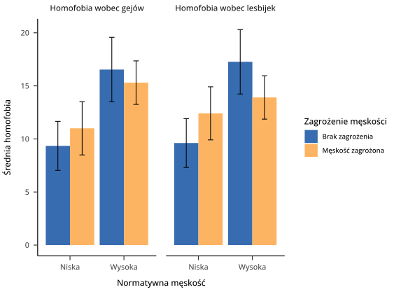
Analizy można napisać niezależnie od procesu zbierania danych. Na III roku studiów miałem projekt studencki, w którym musieliśmy zrobić prosty eksperyment w PsychoPy, przeanalizować dane i zaprezentować wyniki. Termin był krótki, także ostatnie dane większość grup zdążyła zebrać dopiero na dzień przed terminem, w tym moja. Oznaczało to, że osoby robiące analizę statystyczną musiały siedzieć do późna, żeby zdążyć na czas. Ale że już wtedy umiałem co nieco R, to napisałem całą analizę kilka dni wcześniej, kiedy akurat miałem wolny wieczór. Kiedy zebraliśmy ostatnie dane, wystarczyło kliknąć „Run” i gotowe – wykresy, testy, w mgnieniu oka policzone dla całego zestawu danych (wyczyszczonych! jak wspominałem wyżej, w PsychoPy czyszczenie danych bywa żmudne).
R jest zgodny z filozofią Open Science. O ruchu Open Science można mówić bardzo długo, ale ogólnie dąży on do otwartego dostępu do raportów naukowych (za darmo), surowych danych i dokładnych opisów analiz statystycznych. Jeśli naukowiec załącza do swojego artykułu surową bazę danych i skrypt w R, inni naukowcy mogą sprawdzić, czy tamten nie manipulował danymi, nie stosował podejrzanych praktyk oraz czy po ludzku się gdzieś nie pomylił. Poza tym każdy może powtórzyć jego analizę i sprawdzić, czy rzeczywiście wychodzi, jak naukowiec zaraportował. Utrudnia to nadużycia, które – niestety – czasami w nauce się zdarzają.
R jest świetnym środowiskiem do współpracy. Wiele osób może pracować nad jedną analizą statystyczną, podobnie jak teraz pracujemy nad prezentacjami czy plikami w Wordzie – online. Współpracownicy mogą czytać swój kod, uzupełniać się nawzajem, wprowadzać poprawki i dzielić się pracą nawet w obrębie pojedynczych czynności do wykonania. W programach, w których analizy wyklikujemy, jest to znacznie trudniejsze. Gdy mamy kod przed oczami, widzimy wyraźnie, co współpracownik robi i jak mu pomóc.
R wymaga, by wiedzieć, co się robi. Niektórzy mogą to potraktować jako wadę, ale ja sądzę, że to wielka zaleta. Jeśli chcę nauczyć się statystyki, żeby sprawnie zrobić analizy do swojej pracy magisterskiej i rozumieć analizy z artykułów naukowych, to muszę wiedzieć, co robię. Z R ciężko jest nauczyć się na pamięć, w co klikać, a potem po prostu robić to za każdym razem tak samo. Jest to swego rodzaju wyzwanie, ale cenne.
2 Przygotowanie
Żeby zacząć pracować z R, trzeba R pobrać i zainstalować3. Pobrać R możemy ze strony r-project.org. W menu po lewej znajduje się nagłówek Download, a pod nim odnośnik CRAN (Comprehensive R Archive Network, można to nazwać głównym serwerem R). Podchwytliwe jest to, że po wejściu w odnośnik do CRAN pojawi nam się dziwnie wyglądająca lista linków. To strona internetowa pyta nas, z jakiego serwera chcemy pobrać R. Najsensowniej jest wybrać 0-Cloud, czyli coś, co przekieruje nas do optymalnego serwera. Reszta jest już dość intuicyjna – pobieramy R dla naszego systemu i instalujemy jak każdy inny program.
Druga sprawa to IDE, czyli coś, w czym będziemy pisać nasze skrypty. Ale jak to? R nie wystarczy? Technicznie wystarczy, ale R to program działający z wiersza poleceń. To jest to czarne okienko, gdzie wpisujemy komendy ręcznie. Większość z nas będzie chciała skorzystać z czegoś bardziej przystępnego niż goły wiesz poleceń. Standardem jest tu program o nazwie RStudio4. Możemy go pobrać ze strony posit.co w wersji Desktop. Z tym raczej nie będzie już problemu.
Gdy zainstalujemy i uruchomimy RStudio, naszym oczom ukaże się biały ekran, który na razie nie ma sensu, ale go nabierze. Przed rozpoczęciem pracy warto jest zajrzeć w ustawienia (Tools → Global options…), gdzie możemy zmienić kilka rzeczy. W zakładce Appearance możemy ustawić sobie ciemny tryb5 i poczuć się jak programista. W zakładce Spelling możemy wybrać polski słownik do sprawdzania pisowni. Na ten moment tyle zmian powinno wystarczyć.
3 Środowisko R i RStudio
3.1 Konsola, zmienne i matematyka
Ekran RStudio składa się z trzech okienek. Duże okienko po lewej i dwa mniejsze po prawej. Skierujmy naszą uwagę na okienko po lewej, czyli konsolę. Wita nas ona ciepłą informacją, że R jest zainstalowany. Znakiem zachęty > zachęca nas do wydawania jej poleceń. Konsola R to miejsce, w którym możemy mówić R, żeby coś dla nas liczył. Można to potraktować jako super-kalkulator. Spróbuj – wpisz w konsolę 2+3*5, zatwierdź enterem i zwróć uwagę, że R stosuje poprawną kolejność wykonywania działań. Spacje nie mają znaczenia, także możemy wpisać również bardziej estetyczną wersję 2 + 3 * 5. Nie wiem po co, skoro to tylko obliczenie na szybko, ale można.
Wynik takiego działania nigdzie się nie zapisuje, tylko wyświetla się w konsoli. Jeśli chcemy zapisać nasz wynik, możemy to zrobić stosując znaczek <-6. Przydatnym skrótem jest tu w RStudio jest Alt+-, który od razu wstawia nam tę strzałeczkę. Wyjaśnijmy to na przykładzie.
Powyżej zapisałem dwa polecenia, które do konsoli powinniśmy wpisać jedno po drugim i każde z nich zatwierdzić enterem. Pierwsze polecenie mówi konsoli – policz 2 + 3 * 5 i zapisz to w zmiennej wynik. Po zatwierdzeniu tego polecenia możemy zauważyć, że wynik działania nam się nie wyświetlił. Za to w prawym górnym okienku pojawiło się słowo wynik i obok wartość 17. Od tego momentu możemy używać słowa wynik zamiast liczby 17. Spróbuj wpisać w konsolę samo słowo wynik i zatwierdzić enterem. Wyskoczy 17. Jeśli teraz wpiszesz np. wynik * 2, to konsola zwróci to samo, co zwróciłaby po wpisaniu 17 * 2, czyli 34. Co więc robi drugie polecenie z przyładu? Możemy je odczytać jako „W zmiennej o nazwie a zapisz (a <-) wynik mnożenia zmiennej wynik i 3 do potęgi 3 (wynik * 3^3)“. Operator ^ oznacza potęgowanie. Jeśli potem wpiszemy w konsolę a, naszym oczom ukaże się 459, czyli \(17 \times 3^3\).
Jak się potem okaże, w zmiennych możemy zapisywać dużo więcej, niż tylko wyniki prostych działań matematycznych. W identyczny sposób do odpowiednich zmiennych trafią wyniki testów statystycznych albo całe bazy danych. Ale o tym dalej.
3.2 Funkcje
Tym, co robi robotę w R (jak i w każdym innym języku programowania) są funkcje. Funkcje to maszyny, do których wrzucamy jakiś obiekt (np. liczbę), funkcja nam to przekształca i wyrzuca z siebie coś innego. Tak samo jak funkcje w matematyce. Skojarzenie jest słuszne, bo funkcje w programowaniu zapisujemy konwencją f(x), czyli nazwa(co_wrzucam_do_funkcji). Dla przykładu funkcja o nazwie seq pozwala nam wytwarzać regularne sekwencje liczb, np. od 1 do 10 co 2. Musimy do tej funkcji wrzucić (1) od jakiej liczby chcemy zacząć, (2) na jakiej chcemy skończyć i (3) jaki chcemy mieć krok. Dla przykładu:
seq(5, 62, 3)#> [1] 5 8 11 14 17 20 23 26 29 32 35 38 41 44 47 50 53 56 59 62
To, co wrzucamy do funkcji, nazywamy argumentami. Tutaj były nimi liczby. Funkcja seq wie, że ma zacząć od 5 i skończyć na 62, a nie zacząć od 62 i skończyć na 5, bo ma pod maską zapisane, w jakiej kolejności będzie dostawać te liczby. Takie argumenty nazywamy pozycyjnymi – funkcja wie, co to jest i co ma z tym zrobić, na podstawie pozycji. W R każdy argument możemy też jednak nazwać. Dla przykładu wiemy, że argumenty funkcji seq nazywają się from, to i by. Możemy więc wprost powiedzieć funkcji, że oto dajemy jej from, to i by.
seq(from = 5, to = 62, by = 3)#> [1] 5 8 11 14 17 20 23 26 29 32 35 38 41 44 47 50 53 56 59 62
seq(to = 62, by = 3, from = 5) # jeśli nazywamy argumenty, kolejność nie ma znaczenia#> [1] 5 8 11 14 17 20 23 26 29 32 35 38 41 44 47 50 53 56 59 62
Tego typu argumenty nazywamy kluczowymi (keyword) albo nazwanymi (named). W praktyce wykorzystuje się mieszankę jednego i drugiego typu argumentów. Nazywanie argumentów zwiększa czytelność kodu, ale czasem pozycja jest wystarczająco jasna. Dla przykładu mogę napisać sqrt(x = 9), żeby wyciągnąć pierwiastek kwadratowy (square root) z 9, ale czy zapis sqrt(9) jest jakkolwiek mniej jasny?
Czasami też używamy argumentów kluczowych, żeby zmienić jakieś ustawienia domyślne albo odblokować nowe możliwości. Dla przykładu funkcja seq dysponuje dodatkowym argumentem length.out. Jeśli ustawimy length.out, możemy ustalić liczbę elementów w naszym wyniku zamiast punktu końcowego albo kroku.
seq(5, by = 3, length.out = 10) # daj mi 10 kolejnych liczb zaczynając od 5 i co 3#> [1] 5 8 11 14 17 20 23 26 29 32
seq(1, 100, length.out = 10) # podaj 10 liczb między 1 a 100#> [1] 1 12 23 34 45 56 67 78 89 100
3.3 Dokumentacja
Różne funkcje przyjmują różne argumenty. Podobnie jak nie powiemy piekarzowi, żeby stosował białą fugę do naszego chleba, tak samo do funkcji seq nie wrzucimy słów zamiast liczb. Tak jak musimy wiedzieć, że piekarz zajmuje się pieczywem, tak samo musimy znać funkcje, których używamy. W poprzednim podrozdziale wiedzieliśmy, co można wrzucić do funkcji seq i jak nazywają się jej argumenty, bo to napisałem. Tak samo podałem ot tak, że argument funkcji sqrt nazywa się x. Skąd mam to jednak wiedzieć?
Nie bez powodu mówimy o językach programowania. Wiele funkcji nauczymy się na pamięć i będziemy po prostu wiedzieć, jak z nich korzystać. Jednak znacznie częściej (w wielu przypadkach też dla funkcji, które znamy) będziemy korzystać z dokumentacji. R dysponuje świetną dokumentacją dla każdej funkcji7. Zawiera ona opis, co dana funkcja robi, jakie argumenty przyjmuje, a często nawet tło teoretyczne jej działania. Żeby dostać się do dokumentacji danej funkcji, wywołujemy ją w konsoli ze znakiem zapytania, np. ?seq. Powoduje to, że w okienku Help po prawej wyświetla nam się pełna dokumentacja tej funkcji. Nie trzeba więc sięgać do Google, żeby uzyskać odpowiedź na podstawowe problemy. O ile wiemy, jakiej funkcji chcemy użyć. Także zachęcam do częstego sięgania do dokumentacji. To absolutnie podstawowe narzędzie w programowaniu czegokolwiek.
Świetnym źródłem informacji o funkcjach, pozwalającym również znaleźć odpowiednią funkcję do realizacji naszego celu, są ściągi (cheat sheets). Pakiety tidyverse mają nawet swoje oficjalne ściągi, które na początku swojej nauki R wydrukowałem i zalaminowałem. Polecam je gorąco, zwłaszcza do pakietów dplyr, ggplot2 i stringr. Można je znaleźć bezpośrednio w RStudio wybierając Help → Cheat sheets → Browse all cheat sheets albo na stronie Posit, czyli firmy, która wypuszcza RStudio. Jak przejdziemy dalej, do części praktycznej, polecam, żeby mieć te ściągi już przygotowane, wydrukowane lub w .pdf.
3.4 Skrypty
Wpisaliśmy w konsolę już sporo rzeczy. Historię naszych komend możemy zobaczyć przechodząc do odpowiedniej zakładki w prawym górnym okienku. Jednak wyjście z programu może nam skutecznie skasować tę historię. Jeśli mamy całą sporą analizę statystyczną, która składa się z 200 linijek kodu, to chcielibyśmy mieć jakiś sposób na zapisanie tego na przyszłość, żeby nie musieć za każdym razem wklepywać tego kodu z pamięci. Zaopatrujemy się więc w gruby zeszyt w linie i wszystkie komendy piszemy również tam. Żarcik. Do przechowywania kodu służą specjalne pliki zwane skryptami. Tak jak mamy pliki .pdf, .txt, .docx, tak w plikach .R zapisujemy kod R.
Najprościej stworzyć nowy skrypt klikając w biały kwadracik z plusem w lewym górnym rogu RStudio. Spowoduje to otworzenie listy rzeczy, które możemy wytworzyć. Nas w tej chwili interesuje R Script. Gdy utworzymy nasz skrypt, otworzy się on nad konsolą. Warto od razu zapisać go na dysku skrótem Ctrl+S (lub File → Save). Warto się upewnić, że zapisywany plik rzeczywiście kończy się rozszerzeniem .R.
Na razie nasz skrypt jest pusty, ale możemy w nim pisać dowolne polecenia tak samo, jak napisalibyśmy w konsoli. Różnica jest taka, że nie są one od razu wykonywane. Skrypt to tekst. Jeśli chcemy wykonać jakieś polecenie ze skryptu, to albo kopiujemy je do konsoli, albo umieszczamy na nim kursor i klikamy Ctrl+Enter. Możemy też myszką zaznaczyć większy fragment kodu i kliknąć Ctrl+Enter. Jeśli chcielibyśmy wykonać cały nasz skrypt, to zaznaczamy cały kod (Ctrl+A) i ponownie używamy Ctrl+Enter. Ewentualnie możemy skorzystać ze skrótu Ctrl+Shift+S8.
To jest najważniejsza różnica między skryptem a konsolą – cokolwiek wpisane w konsolę jest wykonywane natychmiast i znika. Z konsoli korzystamy, kiedy chcemy zrobić jakieś jednorazowe operacje albo coś sobie przetestować. W skrypt wpisujemy to, co chcemy zachować. Ewentualnie szkic, który potem będziemy naprawiać. Gdy ludzie przechodzą nagle z konsoli do skryptu, bardzo często zaczynają wpisywać w swój skrypt różne śmieci, które wcześniej wpisaliby w konsolę. Konsola nie zniknęła, ciągle jest do naszej dyspozycji. Skrypt w swojej ostatecznej postaci powinien jednak działać tak, że jak go uruchomimy, to cały przeleci bez błędów. No, przynajmniej do tego dążymy. Czyli konsola do testów, skrypt do prawdziwego kodu.
3.5 Komentarze
Jeśli chcielibyśmy zrobić w skrypcie jakąś notatkę, która nie jest kodem, używamy znaczka #. Jest to tzw. komentarz. Możemy na przykład napisać:
print("Hello world!") # czuję się programistąJeśli wykonamy taką linijkę, konsola zignoruje wszystko po znaku #. Pozwala to nam zostawiać sobie notatki w rodzaju # hipoteza 1 albo # nie wiem, czemu to działa, ale działa. Komentowanie kodu może nam (i naszym współpracownikom) ułatwić zrozumienie, o co nam chodziło, gdy to pisaliśmy.
Jeśli chcemy zaopatrzyć nasz kod w nagłówki, żeby podzielić go na sekcje, konwencja mówi, żeby formatować je tak:
# Przygotowanie ----
## Ładowanie danych ----
# kod ładujący dane
## Ładowanie bibliotek ----
# kod ładujący bibliotekiKażdy znaczek # to niższy poziom nagłówka, czyli wytworzyłem sekcję Przygotowanie, a w niej dwie podsekcje Ładowanie danych i Ładowanie bibliotek. Takich poziomów nagłówków możemy mieć, ile chcemy. Nagłówek tym się różni od zwykłego komentarza, że zapisujemy po nim cztery myślniki ---- lub inne znaki. Tak sformatowane nagłówki wyświetlają się w bocznym panelu outline w RStudio i pozwalają się lepiej ogarnąć i poruszać w długim kodzie. Panel outline możemy rozwinąć skrótem Ctrl+Shift+O albo klikając skrajną prawą ikonkę nad edytorem skryptu (poziome kreski na prawo od guzika Source).
3.6 Projekty
Zazwyczaj projekt badawczy składa się z wielu plików. Nie jest to tylko kod R, ale też chociażby pliki z danymi, instrukcje do metod badawczych itd. Zazwyczaj trzymamy to wszystko w jednym folderze. O ile utrzymujemy jakikolwiek porządek w plikach. Możemy też mieć całe studia luzem na pulpicie, nie oceniam. RStudio pomaga nam w zarządzaniu takimi grupami plików poprzez projekty. Projekty w RStudio robią kilka rzeczy, m.in. pozwalają ustawić niestandardowe opcje (np. zmienić język słownika na angielski tylko dla tego jednego projektu), zapamiętać otwarte okna i ich układ, ale przede wszystkim pomagają nam lokalizować pliki znajdujące się w tym samym folderze9. Zawsze, kiedy planujemy zachować jakiś zbiór powiązanych plików na dłużej, warto jest wytworzyć projekt.
Projekty tworzymy i otwieramy przez guzik w prawym górnym rogu. Rozwijane menu pozwala nam stworzyć nowy projekt, a wyskakujące okienko pyta, czy wytworzyć go w już istniejącym folderze, stworzyć nowy folder, czy może pobrać repozytorium Git. Jeśli wybraliśmy nowy folder, mamy kilka typów projektów do wyboru, ale w większości przypadków wybieramy po prostu New Project. Okienko pozwala nam nadać projektowi nazwę, wybrać jego lokalizację, a także wytworzyć puste repozytorium Git10. RStudio wytworzy nam w ten sposób plik .Rproj organizujący nasz projekt.
3.7 Pakiety
Pakiety (packages lub libraries) to niejako dodatki do R, które rozszerzają jego możliwości. Dla przykładu – R w swojej podstawowej wersji nie ma funkcji liczącej skośność. Nie jest to jednak żaden problem, bo możemy R rozszerzyć np. o pakiet o nazwie e1071 albo moments. Oba te pakiety dodają nam do R możliwość szybkiego i prostego policzenia skośności. Pakiety – w olbrzymiej większości – są darmowe.
Absolutnie podstawowym pakietem, czy właściwie zbiorem pakietów, jest tidyverse. tidyverse usprawnia R właściwie we wszystkim, co w podstawowej wersji jest niewygodne – readr (czyt. rider) pozwala łatwo ładować dane, dplyr (czyt. diplajer) niesamowicie usprawnia czyszczenie danych, lubridate i stringr (czyt. stringer) to podstawowe narzędzie do pracy odpowiednio z datami i z tekstem11, nie mówiąc już o ggplot2, czyli najpotężniejszym narzędziu do tworzenia wykresów. Współcześnie tidyverse to podstawowy sposób programowania w R. Na szczęście nie musimy wszystkich tych pakietów przywoływać z osobna, bo możemy załadować je wszystkie naraz, ładując jeden zbiorczy pakiet tidyverse. Pakiety ładujemy za pomocą funkcji library, do której wrzucamy nazwę pakietu w cudzysłowie. Nasz skrypt zaczniemy więc od takiej instrukcji:
library("tidyverse")Jeśli robimy to po raz pierwszy, to po wykonaniu polecenia konsola wyrzuci nam błąd Błąd w poleceniu 'library("tidyverse")':nie ma pakietu o nazwie ‘tidyverse’. Wynika to z faktu, że instrukcja library tylko ładuje pakiet, ale nie pobiera ich wcześniej. Na szczęście robimy to tylko raz. Zawsze później wystarczy samo library. Dlatego też nie będziemy wpisywać komendy instalującej pakiet do skryptu, tylko bezpośrednio do konsoli. Nie chcemy w końcu, żeby pakiet tidyverse instalował się za każdym razem, kiedy będziemy uruchamiać skrypt. Będzie to niemiłosiernie spowalniało skrypt i wymuszało dostęp do Internetu. Dlatego też do konsoli wpisujemy:
install.packages("tidyverse")Innym sposobem instalowania pakietów jest skierowanie się w prawe dolne okienko w RStudio, przejście do zakładki Packages, kliknięcie guzika Install, wpisanie nazwy pakietu w wyskakującym okienku (już bez cudzysłowu) i zatwierdzenie guzikiem Install.
Gdy zainstalujemy już pakiet tidyverse – dowolną z metod – ponownie próbujemy go załadować, tym razem już bez błędu. Konsola poinformuje nas wtedy co dokładnie załadowała.
library("tidyverse")#> ── Attaching packages ─────────────────────────────────────── tidyverse 1.3.2 ──
#> ✔ ggplot2 3.4.1 ✔ dplyr 1.1.0
#> ✔ tidyr 1.3.0 ✔ stringr 1.5.0
#> ✔ readr 2.1.4 ✔ forcats 1.0.0
#> ✔ purrr 1.0.1
#> ── Conflicts ────────────────────────────────────────── tidyverse_conflicts() ──
#> ✖ dplyr::filter() masks stats::filter()
#> ✖ dplyr::lag() masks stats::lag()
4 Ładowanie danych z readr
Jeśli chcemy cokolwiek liczyć, musimy mieć na czym liczyć. R ma wiele sposobów ładowania danych, które w każdym podręczniku zajmują cały rozdział. R poradzi sobie z prawie każdym formatem danych, a także potrafi ładować je bezpośrednio z serwerów (dla przykładu pakiet googlesheets4 pozwala ładować pliki z Google Sheets bez pobierania ich na dysk albo QualtRics ułatwiający importowanie plików z danymi ankietowymi z Qualtrics).
Wszystkie bazy, których używam w tym tekście, są dostępne w repozytorium na GitHubie. Można wejść w ten link, wybrać pożądany plik i albo pobrać go na własny dysk, albo zamiast ścieżki do pliku użyć linku w cudzysłowie. By uzyskać właściwy link, należy kliknąć raw tuż nad treścią pliku. Takie linki można wklejać w komendy czytające dane zamiast ścieżek. Przykład linku, jak i tego, jak używać ich z funkcjami typu read_csv podaję w podrozdziale 5.7 o grupowaniu.
Podstawowe pakiety do ładowania danych do readr i readxl dla plików Excela. Na początek nie trzeba znać składni funkcji ładujących dane, bo RStudio dysponuje przyjemnym graficznym narzędziem do ładowania danych. Jeśli w prawym dolnym oknie, w zakładce Files, klikniemy na plik zawierający dane, dostaniemy do dyspozycji opcję Import Dataset… Po jej wybraniu otworzy nam się okno z podglądem danych i kilkoma opcjami do dostosowania, m.in. czy jakichś wierszy nie pominąć albo z którego arkusza pobrać dane. W plikach .csv czasem musimy też wybrać rodzaj separatora i znaku dziesiętnego (opcja Locale). W polskich plikach z danymi separatorem jest zazwyczaj średnik, a znakiem dziesiętnym przecinek (125 421,55), podczas gdy w angielskich danych będą to odpowiednio przecinek i kropka (125,421.55). Jeśli nie ustawimy znaku dziesiętnego, R może potraktować liczby z przecinkiem jako tekst. Poza tym możemy kliknąć w każdy nagłówek kolumny i wybrać typ danych, ale to niebezpieczna opcja, lepiej tego nie robić. Dane powinny być czyste, tj. kolumny liczbowe powinny zawierać same liczby. Jeśli dane nie są czyste (a zazwyczaj nie są), możemy je wyczyścić potem.
Możemy kliknąć Import, by dopełnić dzieła, ale jeśli tworzymy skrypt, będzie nas interesowała komenda, jaką RStudio dla nas przygotowało w czarnym okienku w prawym dolnym rogu. W pierwszej linijce RStudio proponuje załadowanie odpowiedniego pakietu. Warto to wpisać na początku skryptu, w miejscu, gdzie załadowaliśmy tidyverse. Jeśli proponowanym pakietem jest readr, nie musimy ładować go oddzielnie, bo ładując pakiet tidyverse załadowaliśmy od razu readr. Druga linijka do właściwe ładowanie danych. Widzimy znaną nam już składnię nazwa <-. Nasze dane potrzebują jakiejś nazwy, za pomocą której będziemy się do niej odnosić. Może być to df, dane, warunek_kontrolny czy cokolwiek innego. Za strzałką mamy funkcję odczytującą dane. Najpewniej będzie to read_csv() albo read_excel(). Do tych funkcji wrzucamy jako pierwszy argument lokalizację naszego pliku z danymi w cudzysłowie (‘pojedynczym’ lub “podwójnym”). Ponieważ nam komendę przygotowało RStudio, możemy ją po prostu skopiować i wkleić do naszego skryptu, zmieniając tylko nazwę zmiennej. Co robią poszczególne argumenty, możemy sprawdzić w dokumentacji. Jeśli dane ładuje readr, wykonanie takiej komendy spowoduje ukazanie się informacji zwrotnej – jakie kolumny załadowano i jaki mają typ. Dla przykładu:
df <- read_csv("dane/podstawy-R/complex_database.csv")#> Rows: 54 Columns: 18
#> ── Column specification ────────────────────────────────────────────────────────
#> Delimiter: ","
#> chr (17): Godzina rozpoczęcia, Godzina ukończenia, Adres e-mail, Płeć, Wiek ...
#> dbl (1): ID
#>
#> ℹ Use `spec()` to retrieve the full column specification for this data.
#> ℹ Specify the column types or set `show_col_types = FALSE` to quiet this message.
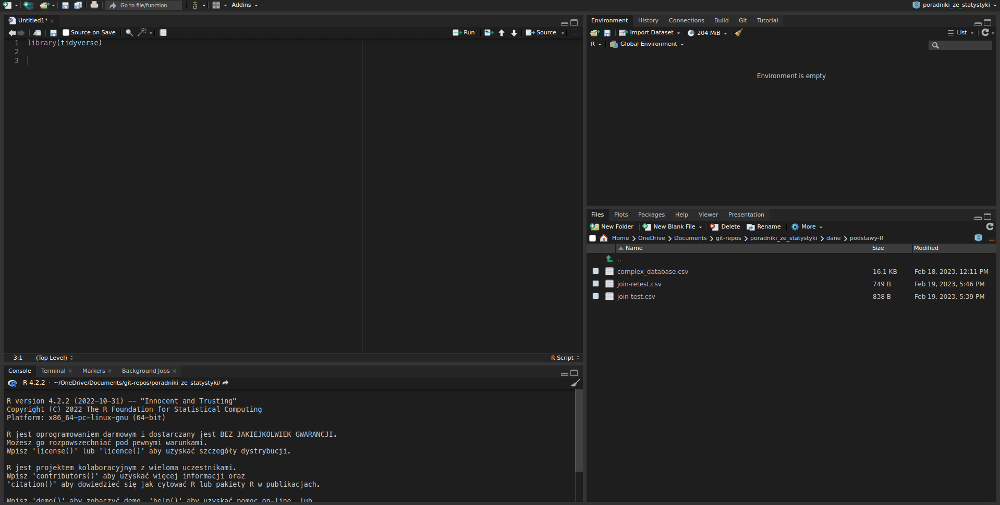
Już widzę, że nic mi się nie zgadza. Z 18 kolumn 17 zostało rozpoznane jako kolumny tekstowe (chr), a tylko kolumna ID jako liczby (dbl). Za chwilę będziemy to czyścić. Żeby wyświetlić nasze dane, mogę wpisać w konsolę nazwę, pod którą je zapisałem. Nasza baza pojawiła się też w okienku w prawym górnym rogu. Kliknięcie na nią tam spowoduje wyświetlenie jej w oddzielnej karcie. Warto zauważyć, że nie możemy jej tam edytować.
df#> # A tibble: 54 × 18
#> ID Godzina…¹ Godzi…² Adres…³ Płeć Wiek …⁴ Wyksz…⁵ Wyraż…⁶ Takie…⁷ Takie…⁸
#> <dbl> <chr> <chr> <chr> <chr> <chr> <chr> <chr> <chr> <chr>
#> 1 1 1.19.22 … 1.19.2… anonym… Mężc… 21 Średnie Tak 5 – zg… 5 – zg…
#> 2 2 1.24.22 … 1.24.2… anonym… Mężc… 52 Wyższe Tak 5 – zg… 5 – zg…
#> 3 3 1.25.22 … 1.25.2… anonym… Mężc… 64 Wyższe Tak 4 – ra… 5 – zg…
#> 4 5 3.2.22 1… 3.2.22… anonym… Kobi… NA NA NA NA NA
#> 5 6 3.2.22 1… 3.2.22… anonym… Mężc… 25 Średnie Tak 6 – zd… 6 – zd…
#> 6 7 3.2.22 1… 3.2.22… anonym… Mężc… 22 Zawodo… Tak 5 – zg… 5 – zg…
#> 7 8 3.2.22 1… 3.2.22… anonym… Kobi… NA NA NA NA NA
#> 8 9 3.2.22 1… 3.2.22… anonym… Mężc… 18 Podsta… Tak 4 – ra… 5 – zg…
#> 9 10 3.2.22 1… 3.2.22… anonym… Mężc… 18 Podsta… Tak 5 – zg… 6 – zd…
#> 10 11 3.2.22 1… 3.2.22… anonym… Kobi… NA NA NA NA NA
#> # … with 44 more rows, 8 more variables:
#> # `Takie widoki w przestrzeni publicznej są normalne [3/10]` <chr>,
#> # `Takie widoki w przestrzeni publicznej są normalne [4/10]` <chr>,
#> # `Takie widoki w przestrzeni publicznej są normalne [5/10]` <chr>,
#> # `Takie widoki w przestrzeni publicznej są normalne [6/10]` <chr>,
#> # `Takie widoki w przestrzeni publicznej są normalne [7/10]` <chr>,
#> # `Takie widoki w przestrzeni publicznej są normalne [8/10]` <chr>, …
5 Data wrangling
Tutaj zaczyna się zabawa. Data wrangling to zbiorcze określenie na wszystkie te działania, kiedy zmieniamy formę naszych danych. Na przykład musimy wziąć tylko niektóre kolumny, odfiltrować jakieś przypadki (np. wybrać tylko osoby z grupy kontrolnej), całkiem zmienić formę danych (np. z szerokiej na długą), dodać nowe zmienne czy przypadki (np. zsumować wyniki kwestionariusza), zmodyfikować kolumny (np. odwrócić punktację w jakiejś pozycji kwestionariusza) itp. itd. Tak naprawdę to to, a nie samo wykonywanie testów statystycznych, zajmuje najwięcej czasu i powoduje najwięcej problemów. Jak więc się za to zabrać?
Zarówno tutaj, jak i później, nie będę wchodził w to, dlaczego coś działa jak działa. Większość poradników R opisuje, jak wykonać pewne operacje w podstawowym R, a następnie jak to robi się współcześnie, czyli wykorzystując pakiet tidyverse. O ile znajomość podstawowego R jest niezbędna do wykonywania bardziej skomplikowanych operacji i przydaje się, gdy coś nie działa i trzeba to jakoś naprawić, to tutaj jednak skupię się na tym, jak to się robi rzeczywiście, a współcześnie podstawy to tidyverse.
5.1 Wybieranie kolumn i wierszy
Bardzo często będziemy potrzebowali tylko określonych kolumn albo tylko określonych wierszy. Przeglądając nasze dane zauważamy, że składają się w dużej części z niepotrzebnych kolumn, jakie wygenerował dla nas program do ankiet. Kolumny takie jak godziny wypełniania są nam niepotrzebne do analizy. Co więcej nasze dane to fragment bazy danych z badania, w którym mówiliśmy mężczyznom, że są mało męscy. Potem patrzyliśmy, jak to wpłynie na nich homofobię. Badaliśmy więc wyłącznie mężczyzn, a mimo to ankietę próbowało też wypełnić kilka kobiet i osób o innej płci. Ponieważ ankieta nie dopuściła ich nawet do metryczki, widzimy w ich przypadkach wartości NA, co w R oznacza „brak danych”.
5.1.1 Filtrowanie wierszy z dplyr::filter
Zacznijmy od tego, że w naszej bazie zostawimy tylko mężczyzn. Wszystkie komendy poniżej wpisuję w konsoli, dla testów. Jeśli wpisujemy komendy modyfikujące dane i nie dodamy specjalnej instrukcji zapisującej, to nie zapisujemy zmian, więc możemy bezpiecznie sprawdzić, co się stanie, jak rzeczywiście to zrobimy. Dopiero na koniec podam, jak nasze zmiany rzeczywiście zapisać. Zachęcam do tego, żeby kolejne kroki pisać samodzielnie (może być w skrypcie) i potem wykonywać, żeby widzieć wszystkie pośrednie kroki. Jak więc odfiltrować nie-mężczyzn? Robimy to za pomocą komendy filter()12. tidyverse opiera się o intuicyjnie brzmiące czasowniki takie jak filter, select, group_by, summarise itd. Komenda filter przyjmuje naszą bazę i jakieś warunki, np. płeć męska. W naszym wypadku będzie to wyglądać tak:
df %>%
filter(Płeć == "Mężczyzna")Dobra, co to jest %>%? Nie było o tym mowy. Owszem, nie było, ale to bardzo wygodna rzecz. Nazywa się pipe (tłumaczone jako potok, bo rura nieładnie brzmi). Mówi mniej więcej „wrzuć to do tego”. W naszym przykładzie df %>% filter() oznacza „wrzuć bazę danych df do funkcji filter“, czyli dokładnie to samo, co filter(df). Po co więc w ogóle bawić się w potoki? Bo pozwalają nam wygodnie łączyć komendy w ciągi, jak zobaczymy za chwilę. Do wstawiania potoków służy nam wygodny skrót klawiszowy Ctrl+Shift+M, który jest chyba najczęściej stosowanym skrótem przy pisaniu dowolnego programu.
Druga kwestia to podział na linijki. Rozbiłem tę komendę na dwie linijki dla czytelności, ale spokojnie mógłbym zapisać to w jednej linijce. Warto jednak pisać kod tak, żeby dało się go potem łatwo czytać. RStudio podpowiada nam też wcięcia, żebyśmy widzieli, że te linijki tworzą jedną całość. W podrozdziale 9 powiem więcej o formatowaniu kodu.
Ta komenda oznacza „weź zmienną df, wrzuć ją do komendy filter i zostaw tylko te przypadki, w których w kolumnie Płeć jest wartość "Mężczyzna".” Nazwy kolumn piszemy bez cudzysłowu, ale jeśli wartość komórki to tekst, to zawsze piszemy go w cudzysłowie. Inaczej R pomyśli, że podajemy mu jakąś zmienną, z której ma dopiero odczytać, co ma być w kolumnie Płeć. Nam chodzi o dosłowny tekst "Mężczyzna".
Ostatecznie zostaje operator logiczny. Dlaczego piszę == zamiast =? W programowaniu znak = służy do przypisywania wartości do zmiennych. Zapis a = 5 oznacza „niech a ma wartość 5”. Sprawdzenie czy a ma wartość 5 odbywa się poprzez komendę a == 5. Konsola wyrzuci nam wtedy TRUE, FALSE albo BŁĄD: nie znaleziono obiektu 'a'. Kilka innych operatorów logicznych prezentuje tabela.
| Operator | Znaczenie | Przykład |
|---|---|---|
| == | równa się | Płeć == "Mężczyzna" |
| != | nie równa się | Płeć != "Kobieta" |
| > (>=) | większe niż (większe lub równe) |
Wiek > 40 |
| < (<=) | mniejsze niż (mniejsze lub równe) |
Wiek < 40 |
| | | lub | Wiek < 18 | Wiek > 60 |
| & | i | Płeć == "Mężczyzna" & Wiek > 40 |
| %in% | zawiera się w zbiorze | Płeć %in% c("Kobieta", "Inna") |
| ! | zaprzeczenie | ! Płeć %in% c("Kobieta", "Inna") |
5.1.2 Wybieranie kolumn z dplyr::select
Odfiltrowaliśmy więc nie-mężczyzn. Kolejny problem to cała seria niepotrzebnych kolumn. Godziny, adres, zgoda etyczna (która była obowiązkowa, więc cała zawiera identyczne wartości) i płeć (już jednakowa dla wszystkich) są nam do niczego niepotrzebne. Do wybierania, jakie kolumny zostawić, służy funkcja select(). Wrzucamy do niej nazwy albo numery kolumn, które chcemy zostawić w bazie. Rozszerzmy więc naszą poprzednią instrukcję o dodatkową komendę za pomocą potoku.
df %>%
filter(Płeć == "Mężczyzna") %>%
select(ID, `Wiek (ukończony w latach)`, Wykształcenie, 9:18)Po pierwsze zauważmy, że wystarczyło dodać potok i kolejną komendę. Teraz cała nasza instrukcja oznacza „Weź df, odfiltruj mężczyzn i potem wybierz kolumny Id, Wiek (ukończony w latach), Wykształcenie oraz kolumny od 9. do 18.”. Do tego więc służą potoki – pozwalają naraz wykonać całą serię modyfikacji tego samego obiektu.
Wypada tu wyjaśnić dwie sprawy. Po pierwsze kolumna z wiekiem zawiera w nazwie spacje. Jeśli nazwa kolumny zawiera niestandardowe znaki, trzeba ją otoczyć znakami ` (pol. grawis, ang. backtick), który znajduje się na klawiaturze tuż pod Esc. Druga rzecz to 9:18, co znaczy „liczby od 9 do 18” i jest wygodnym, skrótowym zapisem seq(9, 18).
Ewentualnie możemy chcieć powiedzieć, żeby zostawić wszystkie kolumny poza jakąś kolumną. Jeśli chcemy wykluczyć 2 kolumny z 200, to lepiej wskazać te 2 do wywalenia niż pozostałe 198 do zachowania. Możemy to zrobić z użyciem znaku -, który wstawiamy przed kolumną. Możemy ustawić minus zarówno przed nazwą kolumny, jak i zakresem kolumn. Warto jednak zauważyć, że zakres pozycji trzeba wziąć w nawias. Inaczej zapis -2:5 R zinterpretuje jako „kolumny od -2 do 5”. Nie jest to głupie, bo „kolumna -2” oznacza „druga od końca”.
df %>%
filter(Płeć == "Mężczyzna") %>%
select(-(2:5), -`Wyrażam świadomą i dobrowolną zgodę na udział w badaniu.`)5.2 Zmiana nazw kolumn z dplyr::rename i purrr::set_names
Z selekcji istniejących infromacji przejdźmy do dodawania nowych. Zacznijmy może od zmiany nazw kolumn, żeby łatwiej nam się pisało dalsze komendy. Do tego służą funkcje rename z pakietu dplyr i set_names z pakietu purrr13. rename służy do zmiany nazw raczej pojedynczych kolumn i przyjmuje argumenty w postaci rename("nowa_nazwa" = "stara nazwa"). Za jednym zamachem możemy zmienić ile nazw chcemy, jeśli jednak chcemy zmienić wszystkie nazwy, wygodniejsza jest funkcja set_names. Wrzucamy do niej po kolei same nowe nazwy. Znowu – nazwy to dosłowne ciągi znaków14, więc zawsze piszemy je w cudzysłowie.
df %>%
filter(Płeć == "Mężczyzna") %>%
select(ID, `Wiek (ukończony w latach)`, Wykształcenie, 9:18) %>%
set_names("id", "wiek", "wyksztalcenie", paste("H", 1:10, sep = "_"))Co znowu namieszałem? Czemu znowu coś utrudniam? Cóż, żeby ułatwić. O ile kolejne nazwy "id", "wiek" i "wyksztalcenie" rozumieją się same przez się, to do czego służy tutaj funkcja paste? Jeśli zerkniemy w bazę danych, zauważymy, że kolejne 10 kolumn to to samo pytanie „Takie widoki w przestrzeni publicznej są normalne”. Odpowiedź na to pytanie (znajdujące się pod obrazkiem neutralnym lub przedstawiającym parę jednopłciową) traktowaliśmy jako wskaźnik homofobii. Jest bardzo częste, że czyszcząc dane z badania mamy serię odpowiedzi z jednego kwestionariusza. Zazwyczaj wszystkie te pytania nazywamy według jednej konwencji np. wszystkie odpowiedzi z kwestionariusza TIPI nazywamy TIPI_1, TIPI_2, TIPI_3 itd. Ale po co pisać te etykiety ręcznie, skoro możemy je wygenerować? Do tego służy funkcja paste. Jeśli widzimy jakąś funkcję zagnieżdżoną w innej funkcji, a nie wiemy, jaką funkcję tam spełnia, można spróbować samą tę wewnętrzną funkcję wpisać w konsolę i zobaczyć, co robi.
paste("H", 1:10, sep = "_")#> [1] "H_1" "H_2" "H_3" "H_4" "H_5" "H_6" "H_7" "H_8" "H_9" "H_10"
Jak widzimy, paste wygenerowało nam 10 kolejnych etykiet łącząc "H" i liczby od 1 do 10. Argument sep = "_" mówi, żeby między kolejnymi kawałkami wstawiać podkreślnik. Do paste możemy wrzucić dowolną liczbę znaków do połączenia. Jeśli nie chcemy żadnego separatora, możemy ustawić sep = "", czyli pusty ciąg znaków w separatorze albo możemy użyć bliźniaczej funkcji paste0, która nie ma separatora. Użycie tej funkcji wewnątrz set_names jest równoważne temu, jakbym napisał te etykietki ręcznie. To jest siła programowania, że dosłowne dane możemy zastępować zmiennymi albo funkcjami, które nam te dane wygenerują. To pozwala nam na przykład zastosować to samo czyszczenie do 100 różnych plików. Wystarczy, że zamiast nazwy danego pliku wszędzie wrzucimy zmienną, a potem będziemy tylko wrzucać do tej zmiennej nazwy kolejnych plików.
Co ciekawe, zmieniać nazwy możemy też za pomocą funkcji select, ale wyłącznie pojedynczo, nie można wtedy użyć czegoś w stylu 9:18. Składnia jest taka sama, jak rename, ale select zmienia też kolejność kolumn i skład wynikowej tabeli, więc trzeba uważać. Jednak do małych tabel, gdzie nie jest problemem wypisać wszystkie kolumny, można spokojnie za jednym zamachem kolumny wybrać i nazwać.
5.3 Zmiana wartości komórek z dplyr::mutate i readr::parse_number
Jak widzimy, odpowiedzi na pytania z homofobią zawierają nie tylko liczby, ale też tekst z wyjaśnieniem tych liczb na skali. My jednak chcemy zostawić same liczby, żeby móc na nich liczyć. Podobny problem mamy z kolumną z wiekiem, gdzie możemy zauważyć, że jest to kolumna tekstowa. Dziwne, w końcu wiek to (tylko) liczba. Przejrzenie danych pozwala stwierdzić, że respondent o id 50 w pytaniu o wiek wpisał „18 (2021)“. Nieważne, jak się będziemy przed tym bronić, co dopiszemy do pytania o wiek, jak bardzo wprost będziemy błagać, żeby wpisywać tam tylko liczby, zawsze znajdzie się ktoś, kto zrobi w nim elaborat. Ten jeden respondent sprawił, że cała ta kolumna została zinterpretowana jako kolumna tekstowa, a nie liczbowa. Odpowiedź na oba te problemy jest taka sama – mutate i parse_number.
Funkcja mutate to ogólna funkcja, za pomocą której modyfikujemy kolumny albo dodajemy nowe. Będziemy ją wykorzystywać bardzo często, za każdym razem, gdy baza danych będzie wymagała poprawek lub dodatkowych obliczeń. Jej składnia wygląda następująco:
zmienna_z_danymi %>%
mutate(
kolumna_do_modyfikacji = jakas_funkcja(kolumna_do_modyfikacji),
nowa_kolumna = inna_funkcja(jak_stworzyc_nowa_kolumne)
)mutate służy do tworzenia nowych kolumn. Możemy ją jednak wykorzystywać do modyfikowania kolumn już istniejących, bo jeśli nowa kolumna ma taką samą nazwę, jak stara, to nowa zastępuje starą. W naszym przykładzie chcemy do kolumny wiek zastosować funkcję parse_number, która pozbywa się z komórek wszystkiego, poza pierwszą napotkaną liczbą15. Taka instrukcja będzie wyglądała następująco:
df %>%
filter(Płeć == "Mężczyzna") %>%
select(ID, `Wiek (ukończony w latach)`, Wykształcenie, 9:18) %>%
set_names("id", "wiek", "wyksztalcenie", paste("H", 1:10, sep = "_")) %>%
mutate(
wiek = parse_number(wiek)
)5.3.1 Przekształcanie wielu kolumn jednocześnie z dplyr::across
Po wykonaniu tej funkcji widzimy, że cała kolumna jest już numeryczna. To samo możemy zrobić dla pytań z homofobią. Moglibyśmy, oczywiście, zapisać H_1 = parse_number(H_1), H_2 = parse_number(H_2) itd., ale po co się męczyć? Na początku roku 2020 dostaliśmy cudowną funkcję pomocniczą across, która przydaje nam się w takich dokładnie wypadkach, gdy chcemy w taki sam sposób zmodyfikować więcej niż jedną kolumnę, bez zbędnego przepisywania tego samego. Jak jej używać?
df %>%
filter(Płeć == "Mężczyzna") %>%
select(ID, `Wiek (ukończony w latach)`, Wykształcenie, 9:18) %>%
set_names("id", "wiek", "wyksztalcenie", paste("H", 1:10, sep = "_")) %>%
mutate(
wiek = parse_number(wiek),
across(starts_with("H_"), parse_number)
)Pierwszą rzeczą, którą ta funkcja przyjmuje, jest zestaw kolumn. Można je wskazać na różne sposoby, np. wypisać ich nazwy albo numery. Gdy używam zestaw, mam na myśli, że trzeba je wpakować w funkcję c() (od concatenate), np. c(1, 8, 10:16). Możemy też użyć jednej z cudownych funkcji pomocniczych z zestawu tidy-select. Tutaj akurat użyłem starts_with("H_"), żeby powiedzieć across, że chodzi mi o wszystkie kolumny, których nazwy zaczynają się od H_. Te same funkcje możemy wykorzystywać w funkcji select przy wybieraniu kolumn (por. Sekcja 5.1.2). Kilka innych tego typu funkcji umieściłem w tabeli.
| Funkcja | Wybierz wszystkie kolumny… |
|---|---|
starts_with() |
których nazwy zaczynają się od |
ends_with() |
których nazwy kończą się na |
contains() |
których nazwy zawierają w sobie |
matches() |
których nazwy zawierają w sobie wyrażenie regularne16 |
: |
zawierają się w zakresie (np. H_1:H_10) |
all_of() |
w których wszystkie wartości spełniają jakiś warunek |
any_of() |
w których jakakolwiek wartość spełnia warunek |
everything() |
w ogóle wszystkie kolumny |
where() |
gdzie spełniony jest inny warunek (np. where(is.numeric))) |
Drugim argumentem, jaki przyjmuje across, jest nazwa funkcji, którą chcemy zastosować. Co ważne, musi to być jej nazwa bez nawiasów. Jest to częsty błąd, sam wiele razy się łapałem na tym, że odruchowo dodawałem do funkcji nawiasy. Wynika to z subtelnej różnicy, polegającej na tym, że jeśli nie używamy nawiasów, podajemy across samą funkcję, obiekt, który ją zawiera, a jeśli damy nawiasy, to wrzucamy w ten sposób do across wynik działania tej funkcji. Spowodowałoby to, że w tym wypadku dostalibyśmy błąd, że funkcja parse_number() nie dostała wymaganych argumentów. Jeśli chcielibyśmy dorzucić do parse_number jakieś argumenty (jak locale17), możemy to zrobić po przecinku18. Szczegóły, jak zwykle, znajdziemy w dokumentacji funkcji across.
5.3.2 Odwracanie punktacji
Bardzo często zdarza nam się, że w kwestionariuszach niektóre pozycje mają odwróconą punktację. Na przykład w kwestionariuszu samooceny Rosenberga SES pojawia się pozycja „Czasem czuję się bezużyteczny(-a)“. Odpowiada się na skali 1 do 4. Wiadomo, że osoba, która zaznacza przy takiej pozycji 4, nie pokazuje swojej wysokiej samooceny. Jest to pozycja z odwróconą punktacją, czyli 4 należy liczyć jako 1, 3 jako 2 itd. Przekształcenie to można zrobić bardzo łatwo. Najpierw dodajemy skrajne wartości skali, np. dla SES \(1 + 4 = 5\). Teraz od 5 odejmujemy odpowiedź osoby badanej i dzięki temu rzeczywiście 4 zamienia się w 1, 3 w 2 itd. Jak odwrócić punktację w R?
Ponieważ jest to modyfikacja kolumny, użyjemy funkcji mutate. Załóżmy, że H_5 ma odwróconą punktację. Oceny były na skali od 1 do 6, więc wyniki osób badanych musimy odjąć od 7. W takiej sytuacji kod wyglądałby następująco:
df %>%
filter(Płeć == "Mężczyzna") %>%
select(ID, `Wiek (ukończony w latach)`, Wykształcenie, 9:18) %>%
set_names("id", "wiek", "wyksztalcenie", paste("H", 1:10, sep = "_")) %>%
mutate(
wiek = parse_number(wiek),
across(H_1:H_10, parse_number),
H_5 = 7 - H_5
)Niektórzy lubią tworzyć nowe kolumny na odwróconą punktację, my jednak po prostu zastąpiliśmy oryginalną kolumnę H_5. Zawsze można jednak użyć innej nazwy, np. H_5_odwr =. Jeśli chcemy odwrócić wiele kolumn, możemy użyć across. Załóżmy, że H_7 też ma odwróconą punktację. W takim wypadku nasz kod mógłby wyglądać tak:
df %>%
filter(Płeć == "Mężczyzna") %>%
select(ID, `Wiek (ukończony w latach)`, Wykształcenie, 9:18) %>%
set_names("id", "wiek", "wyksztalcenie", paste("H", 1:10, sep = "_")) %>%
mutate(
wiek = parse_number(wiek),
across(H_1:H_10, parse_number),
H_5 = 7 - H_5,
H_7 = 7 - H_7
)Jeśli mamy wielki kwestionariusz i nie chce nam się 100 razy pisać tego samego, możemy użyć across:
df %>%
filter(Płeć == "Mężczyzna") %>%
select(ID, `Wiek (ukończony w latach)`, Wykształcenie, 9:18) %>%
set_names("id", "wiek", "wyksztalcenie", paste("H", 1:10, sep = "_")) %>%
mutate(
wiek = parse_number(wiek),
across(H_1:H_10, parse_number),
across(c(H_5, H_7), \(x) {7 - x})
)Pierwszym argumentem jest zestaw kolumn, dlatego nazwy kolumn opakowałem w c(). select czy filter nie potrzebowały, żeby robić takie zestawy, ale wiele funkcji (zwłaszcza spoza tidyverse) tego wymaga. Co z drugim argumentem, czyli funkcją? Tutaj wchodzimy głębiej w programistyczne meandry. Można, oczywiście, zostać przy wersji bez across, ale odważnych zapraszam do świata funkcji anonimowych.
5.3.3 Własne funkcje
Drugi argument w across to funkcja, jakiej across ma użyć do przekształcenia kolumn. Niestety nie ma funkcji, która odejmowałaby od 7. Żeby sobie z tym poradzić, musimy albo taką funkcję wcześniej samodzielnie napisać, albo użyć tzw. funkcji anonimowej (zwanej też lambda). Pierwsza opcja jest łatwa do zrozumienia, ale wymaga sporo pisania jak na coś, czego użyjemy tylko raz. Tworzenie własnych funkcji w R jest dość łatwe. Nasza funkcja mogłaby wyglądać tak:
odejmij_od_7 <- function(wynik) {
7 - wynik
}Pierwsza rzecz to nazwa. Obrazowo nazwałem naszą funkcję odejmij_od_7. Dalej następuje słowo kluczowe function i w nawiasie argumenty naszej funkcji. My wrzucamy do funkcji wynik osoby badanej, więc nasz argument nazwałem obrazowo wynik. Pewnie w rzeczywistej sytuacji użyłbym x, bo nazwa funkcji jest wystarczająco sugerująca. Jeśli chcemy, dla czytelności, rozbić funkcję na kilka linijek, otwieramy nawiasy klamrowe i w nich opisujemy, co funkcja ma robić. Nic nie stoi na przeszkodzie, żeby opisać to wszystko w jednej linijce: function(wynik) 7 - wynik. Po wykonaniu powyższego kodu nasza funkcja rzeczywiście działa, co możemy sprawdzić używając jej w konsoli.
odejmij_od_7(3)#> [1] 4
odejmij_od_7(12)#> [1] -5
Jeśli mamy kilka kwestionariuszy z odwróconą punktacją, każdy z inną skalą, możemy od razu zrobić bardziej ogólną funkcję do odwracania.
odejmij_od <- function(wynik, od_czego) {
od_czego - wynik
}
odejmij_od(3, 7)#> [1] 4
odejmij_od(2, od_czego = 4)#> [1] 2
Bardziej ogólna funkcja wymaga podania drugiego argumentu, tzn. od czego trzeba odjąć wynik. Jak widać, ta funkcja też działa i przyjmuje argumenty pozycyjne lub nazwane. Obu funkcji, po zadeklarowaniu, możemy użyć w across.
df %>%
filter(Płeć == "Mężczyzna") %>%
select(ID, `Wiek (ukończony w latach)`, Wykształcenie, 9:18) %>%
set_names("id", "wiek", "wyksztalcenie", paste("H", 1:10, sep = "_")) %>%
mutate(
wiek = parse_number(wiek),
across(H_1:H_10, parse_number),
across(c(H_5, H_7), odejmij_od, od_czego = 7)
)Tutaj nam się to nie przyda, ale nic nie stoi na przeszkodzie, żeby wewnątrz funkcji używać innych funkcji i wielokrotnie używane serie komend przerabiać na pojedynczą komendę. Hadley Wickham wykorzystuje zasadę, że jeśli kopiujesz kod więcej niż dwa razy, to znaczy, że trzeba zrobić z niego funkcję.
5.3.3.1 Funkcje anonimowe
Jeśli funkcja jest prosta i używamy jej tylko raz, często nie chcemy zaśmiecać sobie kodu jej definicją. Wtedy z pomocą przychodzą nam funkcje anonimowe (zwane też funkcjami lambda). Anonimowe, bo nie mają swojej nazwy. Podstawowy sposób ich używania to zadeklarowanie ich od razu w miejscu użycia.
across(c(H_5, H_7), function(wynik) 7 - wynik)Zamiast nazwy funkcji użyliśmy tutaj od razu jej definicji. Funkcja jest w pełni sprawna i różni się od odejmij_od_7 tylko tym, że nie ma nazwy.
Inny, jeszcze bardziej zwięzły, sposób używania funkcji anonimowych wprowadza R w wersji 4.1.0. Polega on na zapisaniu naszej funkcji w nawiasach klamrowych. Dla przykładu odemowanie od 7 zapiszemy jako {7 - x}. Dlaczego akurat x a nie np. y albo wynik, jak robiliśmy wcześniej? Bo to ustaliłem pisząc przed naszą anonimową funkcją \(x). Zamiast x mógłbym swoją zmienną zapisać w dowolny sposób. Takie coś w całości, czyli \(x) {7 - x}19, możemy zapisać w miejscu funkcji w across, co zrobiłem na początku, jak chciałem wzbudzić ciekawość.
Jak wspomniałem w jednym z przypisów, dokumentacja dplyr od niedawna sugeruje, że jeśli funkcja potrzebuje jakichś dodatkowych argumentów, to żeby używać funkcji anonimowej, zamiast wpisywać arguemnty po przecinku. Co prawda wpisywanie po przecinku działa, ale moglibyśmy chcieć na wszelki wypadek dostosować się do nowych standardów. W takim wypadku moglibyśmy zmodyfikować przykład z poprzedniego podrozdziału, gdzie używaliśmy funkcji odejmij_od i dodatkowego arguemntu od_czego.
# źle, choć jeszcze działa
across(c(H_5, H_7), odejmij_od, od_czego = 7)
# dobrze
across(c(H_5, H_7), \(x) {odejmij_od(x, od_czego = 7)})5.4 Nowe kolumny
Jak wspomniałem, funkcja mutate nie tylko pozwala na modyfikowanie istniejących kolumn, ale też na tworzenie nowych. Zazwyczaj robimy to w dwóch przypadkach – gdy chcemy zagregować dane z wierszy, np. zsumować wyniki z danego kwestionariusza albo gdy chcemy podzielić naszą bazę na kategorie, np. „młodzi”, „w średnim wieku”, „seniorzy”. Omówmy to po kolei.
5.4.1 Agregowanie danych z wierszy z dplyr::pick
Załóżmy, że homofobię będziemy liczyć poprzez dodanie H_1 + H_2 + H_3 itd. Czasami będziemy chcieli robić sumy, czasami policzyć średnią20. W kwestionariuszach zazwyczaj liczymy sumy, ale np. dla czasów reakcji zazwyczaj będziemy chcieli policzyć średnią. Jak więc dodać taką kolumnę z sumami w R? Mamy dwa sposoby. Pierwszy to wprost opisanie, co dodajemy, wewnątrz mutate.
df %>%
filter(Płeć == "Mężczyzna") %>%
select(ID, `Wiek (ukończony w latach)`, Wykształcenie, 9:18) %>%
set_names("id", "wiek", "wyksztalcenie", paste("H", 1:10, sep = "_")) %>%
mutate(
wiek = parse_number(wiek),
across(H_1:H_10, parse_number),
across(c(H_5, H_7), ~ 7 - .x),
H_suma = H_1 + H_2 + H_3 + H_4 + H_5 + H_6 + H_7 + H_8 + H_9 + H_10
)Jak można się domyślić, istnieje sposób niewymagający tyle pisania, które w skomplikowanych bazach i długich kwestionariuszach naprawdę może być długotrwałe i uciążliwe. tidyverse ratuje nas tutaj funkcją pick21, a bazowy R dokłada funkcję rowSums (i rowMeans). Wystarczy, że do funkcji rowSums wrzucimy, które kolumny chcemy zsumować, wskazując je właśnie za pomocą pick i ewentualnie funkcji pomocniczych, tak jak robiliśmy w select (por. 5.1.2) i across (por. 5.3.1).
df %>%
filter(Płeć == "Mężczyzna") %>%
select(ID, `Wiek (ukończony w latach)`, Wykształcenie, 9:18) %>%
set_names("id", "wiek", "wyksztalcenie", paste("H", 1:10, sep = "_")) %>%
mutate(
wiek = parse_number(wiek),
across(H_1:H_10, parse_number),
across(c(H_5, H_7), ~ 7 - .x),
H_suma = rowSums(pick(H_1:H_10))
)5.4.2 Kategoryzowanie przypadków i przekodowywanie z dplyr::case_when
Czasem zdarza się, że chcemy podzielić dane ilościowe (np. wiek, wzrost, szczęście mierzone kwestionariuszowo) na kategorie (młodzi vs nie-aż-tak-młodzi, wysocy vs niscy, szczęśliwi vs nieszczęśliwi). Zdarza się też, że osoba tworząca ankietę nie była na tyle przewidująca, żeby w odpowiedziach do „zdecydowanie się zgadzam” dodać 6, więc nie możemy po prostu użyć parse_number. I w jednym, i w drugim wypadku musimy stworzyć wartości na podstawie innych wartości, np. wzrost poniżej 160 cm zamienić na „niski” albo tekst „zdecydowanie się nie zgadzam” zamienić na 1. Do takich celów służy niezwykle przydatna funkcja case_when z pakietu dplyr. Załóżmy, że chcemy podzielić mężczyzn w naszej bazie na trzy kategorie wykształcenia – podstawowe, ponadpodstawowe i wyższe. Oznacza to, że osoby z wykształceniem średnim i zawodowym musimy wrzucić do jednego worka. W tym celu rozszerzymy naszą instrukcję o kolejną komendę. Funkcja case_when ma dość prostą składnię.
case_when(
warunek_1 ~ wartosc_jesli_prawda,
warunek_2 ~ wartosc_jesli_prawda,
warunek_3 ~ wartosc_jesli_prawda,
.default = wartosc_dla_calej_reszty
)Funkcja po kolei sprawdza warunki. Jeśli natrafi na jakiś spełniony warunek, zatrzyma się i da taką wartość, jaką temu warunkowi przypisaliśmy. Warunek jest logiczny, czyli może to być cokolwiek od wyksztalcenie == "Średnie" po wzrost <= 160. Należy pamiętać, że jeśli wartość wynikowa ma być tekstem, musimy napisać ją w cudzysłowie, jak każdy dosłowny tekst. .default = wartosc może nam służyć do ustalania, co ma być, jeśli żaden z powyższych warunków się nie sprawdzi22. Jeśli chodzi o przykład z wykształceniem, moglibyśmy rozwiązać go tak:
df %>%
filter(Płeć == "Mężczyzna") %>%
select(ID, `Wiek (ukończony w latach)`, Wykształcenie, 9:18) %>%
set_names("id", "wiek", "wyksztalcenie", paste("H", 1:10, sep = "_")) %>%
mutate(
wiek = parse_number(wiek),
across(H_1:H_10, parse_number),
across(c(H_5, H_7), ~ 7 - .x),
H_suma = rowSums(pick(H_1:H_10)),
wyksztalcenie_grupa = case_when(
wyksztalcenie == "Średnie" ~ "Ponadpodstawowe",
wyksztalcenie == "Zawodowe" ~ "Ponadpodstawowe",
.default = wyksztalcenie
)
)W tym wypadku case_when, idąc wiersz po wierszu, sprawdza, czy w kolumnie wyksztalcenie nie znajduje się wartość "Średnie". Jeśli tak, to w tworzonej właśnie kolumnie wyksztalcenie_grupa wstawia wartość "Ponadpodstawowe" i przechodzi do kolejnego wiersza. Jeśli wykształcenie nie jest średnie, to sprawdza, czy jest zawodowe i w razie czego również wstawia "Ponadpodstawowe". Jeśli nie jest ani średnie, ani zawodowe, to wstawia to, co akurat jest w kolumnie wyksztalcenie, czyli dla osób z wykształceniem podstawowym wstawia "Podstawowe", a dla osób z wykształceniem wyższym "Wyższe"23. W ten sposób z 4 kategorii wykształcenia zrobiły nam się 3. W podobny sposób przekodowywalibyśmy klucz w ankiecie na liczby, np. pisząc H_1 == "Zdecydowanie się zgadzam" ~ 6. Możemy ułatwić sobie to przekodowywanie za pomocą questionr, który opisuję w podrozdziale 5.5.1.1.1.
5.5 Sortowanie i kolejność kolumn
Wychodzimy już z potężnej funkcji mutate i możemy czyścić dalej. Ostatnia rzecz, którą czasem chcemy zrobić (zazwyczaj ze względów estetycznych), to posortowanie wartości i ustawienie kolumn w określonej kolejności.
5.5.1 Sortowanie z dplyr::arrange
Za sortowanie w tidyverse odpowiada funkcja arrange. Domyślnie sortuje ona rosnąco, więc jeśli chcemy zastosować sortowanie malejące, użyjemy pomocniczej funkcji desc (od descending). Załóżmy, że chcemy posortować nasze dane najpierw według wykształcenia (od najwyższego, do najniższego), a w obrębie wykształcenia według wieku (od najmłodszych do najstarszych). W pierwszym odruchu chcielibyśmy wpisać arrange(desc(wyksztalcenie), wiek). Jest to dobry odruch, jednak jeśli to zrobimy, zorientujemy się, że najwyższym z wykształceń jest wykształcenie zawodowe. Dzieje się tak dlatego, że w tej chwili wykształcenie to zwykły tekst, a więc jest sortowany alfabetycznie, nie według naszego klucza. Żeby to zmienić, musimy poznać nowy rodzaj danych.
5.5.1.1 Factors
Czynniki (factors) to rodzaj danych, za pomocą których przechowujemy tekst, który ma tylko kilka możliwych wartości albo gdy te wartości mają jakąś kolejność, którą chcemy wziąć pod uwagę. Jeśli mamy etykiety takie jak wykształcenie, czy grupa kontrolna/eksperymentalna, to powinniśmy je przechowywać właśnie w tej postaci. Danymi tego typu w tidyverse zajmuje się pakiet forcats. Żeby zmienić wykształcenie z czystego tekstu na czynnik, dopiszemy jedną linijkę do naszego mutate i od razu posortujemy.
df %>%
filter(Płeć == "Mężczyzna") %>%
select(ID, `Wiek (ukończony w latach)`, Wykształcenie, 9:18) %>%
set_names("id", "wiek", "wyksztalcenie", paste("H", 1:10, sep = "_")) %>%
mutate(
wiek = parse_number(wiek),
across(H_1:H_10, parse_number),
across(c(H_5, H_7), ~ 7 - .x),
H_suma = rowSums(pick(H_1:H_10)),
wyksztalcenie_grupa = case_when(
wyksztalcenie == "Średnie" ~ "Ponadpodstawowe",
wyksztalcenie == "Zawodowe" ~ "Ponadpodstawowe",
.default = wyksztalcenie
),
wyksztalcenie = factor(
wyksztalcenie,
levels = c("Podstawowe", "Zawodowe", "Średnie", "Wyższe"),
ordered = TRUE
)
) %>%
arrange(desc(wyksztalcenie), wiek)Komendę factor dla czytelności rozbiłem tutaj na trzy linijki, ale – oczywiście – można ją całą zapisać w jednej. Po pierwsze wskazałem, że na factor przerobiona ma być kolumna wyksztalcenie. Po drugie wskazałem, jakie wykształcenie może mieć wartości, zbierając je w jeden zestaw funkcją c i wrzucając do argumentu levels. Na koniec poinformowałem R, że w kolejność jest tutaj ważna, dopisując ordered = TRUE. Jeśli tak przerobione dane posortujemy, zobaczymy, że baza rzeczywiście zaczyna się od wykształcenia wyższego.
5.5.1.1.1 questionr
Przy okazji czynników chciałbym wspomnieć o pierwszym dodatku (addin) do RStudio, jaki może nam się przydać. Dodatki przyjmują różną formę, ale tutaj omówię dwa, które są graficznymi narzędziami pomagającymi nam pisać kod. Można mieć do nich mieszany stosunek, ale póki umiemy też napisać kod ręcznie (lub chociaż wiemy, jak skorzystać z dokumentacji), to mogą być dużą pomocą, zwłaszcza na początku przygody z R. Pierwszym takim dodatkiem jest questionr, który pozwala nam stworzyć komendy związane z czynnikami (i kategoryzować dane ilościowe, co ręcznie robiliśmy w podrozdziale 5.4.2).
questionr instalujemy jak każdy inny pakiet (install.packages("questionr")). Od tego momentu (lub po zresetowaniu RStudio) w menu Addins na górnej belce znajdziemy trzy nowe opcje. Ta interesująca nas to Level ordering. Na początku zobaczymy okienko, w którym możemy wybrać kilka rzeczy. W jakiej zmiennej chcemy zmienić kolejność, w jakiej kolumnie i z jakiego pakietu wziąć funkcję do zmiany kolejności (domyślnie jest to fct_relevel z forcats). W drugiej zakładce możemy graficznie ustawić taką kolejność, jaką chcemy. W ostatniej zakładce otrzymujemy gotowy kod. Questionr nie robi nic samodzielnie, ten kod trzeba jeszcze wkleić w skrypt. Z jednym kruczkiem. Nam chodzi o samą komendę fct_relevel, bez pierwszej linijki, która służy do zapisania zmian. Ponieważ my tworzymy mutate, to wystarczy, że skopiujemy nasze gotowe fct_relevel() do funkcji mutate, dopisując nazwę kolumny i pierwszy argument. Może być to użyteczne, jeśli mamy dużo czynników lub dużo poziomów w czynniku. Ostatecznie nasza komenda mutate z użyciem questionr wyglądałaby tak:
mutate(
wiek = parse_number(wiek),
across(H_1:H_10, parse_number),
across(c(H_5, H_7), ~ 7 - .x),
H_suma = rowSums(pick(H_1:H_10)),
wyksztalcenie_grupa = case_when(
wyksztalcenie == "Średnie" ~ "Ponadpodstawowe",
wyksztalcenie == "Zawodowe" ~ "Ponadpodstawowe",
.default = wyksztalcenie
),
wyksztalcenie = fct_relevel(
wyksztalcenie,
"Podstawowe", "Zawodowe", "Średnie", "Wyższe"
)
)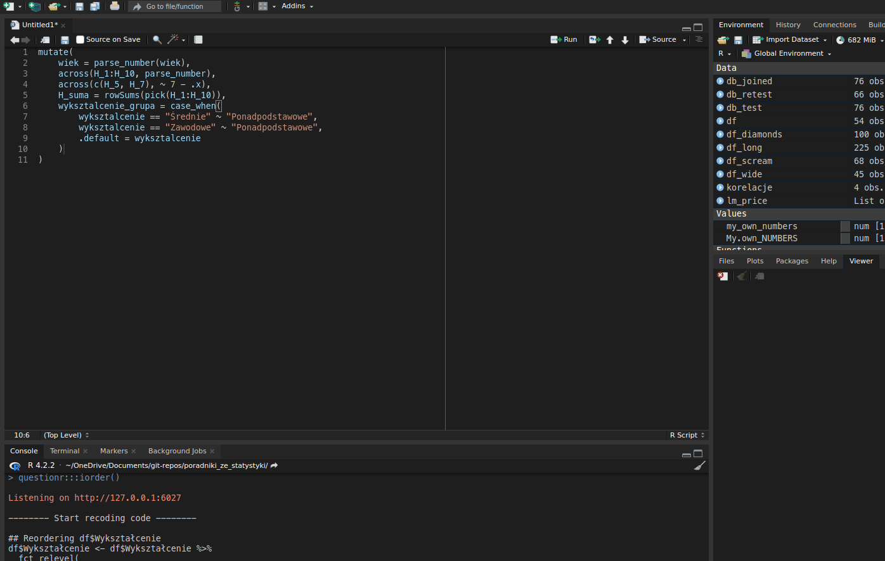
questionr5.5.2 Kolejność kolumn z dplyr::relocate
Możemy chcieć mieć nasze kolumny w określonej kolejności. Są zasadniczo dwa sposoby zmieniania kolejności kolumn. Jest funkcja relocate, która służy raczej przestawianiu pojedynczych kolumn lub ich niewielkiej liczby. Jeśli chcemy od nowa określić kolejność kolumn, możemy wykorzystać w tym celu znaną nam już funkcję select (por. 5.1.2). Załóżmy, że chcielibyśmy przestawić kolumnę H_suma przed kolumny z cząstkowymi wynikami.
# z użyciem relocate
df %>%
relocate(H_suma, .before = H_1)
# z użyciem select
df %>%
select(id, wiek, wyksztalcenie, H_suma, everything())Jeśli przestawiamy kolumny z użyciem relocate, powinniśmy ustawić argument .before albo .after. Oba wymagają nazwy kolumny przed którą lub po której chcemy mieć naszą kolumnę. Jeśli nie ustawimy żadnego, nasze kolumny zostaną przeniesione na początek tabeli. Jeśli używamy select, musimy wpisać kolejność naszych kolumn ręcznie. Zastanawiające może być użycie przeze mnie everything(). W tym kontekście znaczy ono „i potem cała reszta”.
5.6 Zapisywanie zmian z <-
W ten sposób uzyskaliśmy cały kod czyszczący. Mamy ów kod zapisany w naszym skrypcie. Jeśli go uruchomimy, to widzimy, że działa. Jednak jeśli w konsolę wpiszemy samo df, naszym oczom ciągle ukazuje się stara, brzydka baza. Jak więc zmienić nasze df na wyczyszczoną wersję? Tak jak zawsze przypisujemy wartości w R – operatorem <-. Nasz kod na zmianę brudnej bazy w czystą ostatecznie przyjmie postać:
df <- df %>%
filter(Płeć == "Mężczyzna") %>%
select(ID, `Wiek (ukończony w latach)`, Wykształcenie, 9:18) %>%
set_names("id", "wiek", "wyksztalcenie", paste("H", 1:10, sep = "_")) %>%
mutate(
wiek = parse_number(wiek),
across(H_1:H_10, parse_number),
across(c(H_5, H_7), ~ 7 - .x),
H_suma = rowSums(pick(H_1:H_10)),
wyksztalcenie_grupa = case_when(
wyksztalcenie == "Średnie" ~ "Ponadpodstawowe",
wyksztalcenie == "Zawodowe" ~ "Ponadpodstawowe",
.default = wyksztalcenie
),
wyksztalcenie = factor(
wyksztalcenie,
levels = c("Podstawowe", "Zawodowe", "Średnie", "Wyższe"),
ordered = TRUE
)
) %>%
arrange(desc(wyksztalcenie), wiek) %>%
relocate(H_suma, .before = H_1)Kod ten możemy uruchomić dla dowolnej ilości danych, w dowolnym momencie. Jest wielokrotnego użytku i spokojnie możemy go wykorzystać, kiedy baza się rozrośnie. Nie musimy go wtedy pisać od nowa, a wystarczy, że go uruchomimy. Co więcej, mogę wpaść jeszcze na jakiś pomysł i dopisać linijkę na samym początku, nie musząc całej reszty robić od nowa. Sprawmy sobie tę przyjemność i zerknijmy na naszą wyczyszczoną bazę.
df#> # A tibble: 45 × 15
#> id wiek wyksztal…¹ H_suma H_1 H_2 H_3 H_4 H_5 H_6 H_7 H_8
#> <dbl> <dbl> <ord> <dbl> <dbl> <dbl> <dbl> <dbl> <dbl> <dbl> <dbl> <dbl>
#> 1 54 21 Wyższe 44 5 5 5 5 2 5 2 5
#> 2 33 22 Wyższe 43 5 5 4 5 2 5 2 5
#> 3 30 23 Wyższe 45 6 5 5 5 2 5 3 5
#> 4 49 23 Wyższe 45 6 6 6 6 1 6 1 6
#> 5 31 24 Wyższe 39 3 4 4 4 3 4 4 4
#> 6 38 25 Wyższe 44 5 5 5 5 2 5 2 5
#> 7 46 25 Wyższe 33 5 5 1 5 2 1 3 5
#> 8 43 26 Wyższe 45 6 6 6 6 1 6 1 6
#> 9 35 29 Wyższe 50 6 6 6 6 1 6 1 6
#> 10 2 52 Wyższe 44 5 5 5 5 2 5 2 5
#> # … with 35 more rows, 3 more variables: H_9 <dbl>, H_10 <dbl>,
#> # wyksztalcenie_grupa <chr>, and abbreviated variable name ¹wyksztalcenie
Po zapisaniu zmiennej df, tracimy naszą starą bazę danych, która była w niej zapisana. To jest tak, jakbyśmy kopiowali plik do folderu, w którym znajduje się już plik o takiej samej nazwie. Operator <- nadpisuje starą zmienną.
Tym samym, jeśli uruchomilibyśmy nasz kod jeszcze raz, ale już na nowej zmiennej df, wyskoczy nam błąd. W końcu nowa zmienna nie ma tych samych kolumn, co stara zmienna. Co więcej, takiej operacji przypisania nie da się w prosty sposób cofnąć. Jeśli chcemy dostać swoją starą, brudną bazę, musimy ponownie załadować ją z pliku. To prowadzi nas do ważnego wniosku co do pisania skryptów – powinniśmy pisać je tak, żeby dało się z nich odtworzyć wszystko, co robiliśmy od samego początku24. Dzięki temu, jeśli chcemy się z czegoś wycofać, zaznaczamy i wykonujemy cały kod przed interesującym nas momentem. Brak skrótu Ctrl+Z jest jedną z ważniejszych różnic między analizą w programach typu SPSS czy Statistica a analizą w językach programowania typu R czy Python. Wbrew pozorom idzie się przyzwyczaić. Ta sama właściwość pozwala na zachowanie przejrzystości w nauce – pokaż mi swój kod, a będę wiedział bardzo dokładnie, jak prowadziłeś(-aś) swoją analizę.
5.7 Grupowanie (dplyr::group_by) i agregowanie (dplyr::summarise)
Gdy mamy już bazę, zazwyczaj chcemy policzyć pewne statystyki dla podgrup osób badanych, np. dla osób różniących się wykształceniem, płcią czy jakąś manipulacją. Chcemy na przykład poznać średnią homofobię osób o różnym wykształceniu, sprawdzić liczebność naszych podgrup czy policzyć inne zbiorcze statystyki. Możemy, oczywiście, odfiltrować najpierw osoby o wykształceniu podstawowym, policzyć dla nich, potem osoby o wykształceniu średnim itd. Są jednak prostsze sposoby, a obejmują one użycie group_by i summarise25. Te dwie funkcje zazwyczaj idą ze sobą w parze i zgrupowane dane od razu trafiają do summarise. Poniżej przykład.
df %>%
group_by(wyksztalcenie) %>%
summarise(
n = n(),
H_M = mean(H_suma),
H_SD = sd(H_suma),
H_Me = median(H_suma),
V = H_SD / H_M
)#> # A tibble: 4 × 6
#> wyksztalcenie n H_M H_SD H_Me V
#> <ord> <int> <dbl> <dbl> <dbl> <dbl>
#> 1 Podstawowe 3 47 3.61 48 0.0767
#> 2 Zawodowe 2 46 2.83 46 0.0615
#> 3 Średnie 29 42.3 5.00 43 0.118
#> 4 Wyższe 11 42.9 4.35 44 0.101
Jak widzimy, dostaliśmy tabelkę z wykształceniem i wskazanymi statystykami. Funkcja n zliczyła nam przypadki osób z poszczególnym wykształceniem, mean policzyła średnią, sd odchylenie standardowe, a median medianę. V to tzw. współczynnik zmienności. Co to jest, nie jest teraz szczególnie ważne. Policzyłem to tutaj, żeby pokazać, że w obliczeniach możemy też wpisywać niestandardowe operacje (jak dzielenie) bez żadnych strasznych funkcji anonimowych, a także że możemy wziąć wartości z innych kolumn jako argumenty do naszych przekształceń. Tutaj V to odchylenie standardowe średniej homofobii (H_SD) podzielone przez samą średnią (H_M). Każdą kolumnę mogliśmy nazwać wedle życzenia. Jak dowiemy się w podrozdziale 6.1, istnieją funkcje, które najpopularniejsze zastawy statystyk opisowych liczą za nas.
Tak robiliśmy to zawsze, jednak dplyr 1.1.0. wprowadził inny sposób grupowania. Jeśli nie chcemy zapisywać grup w naszej bazie danych na później (czyli w większości przypadków), nie musimy w ogóle używać funkcji group_by. Zamiast tego summarise dostał argument .by, za pomocą którego możemy wskazać grupy jednorazowo, tylko na potrzeby tego jednego podsumowania. Więcej na temat argumentu .by można znaleźć w dokumentacji. Poniżej przykład z innego zbioru danych, w którym pojawia się średnia liczba krzyków w piosence, w zależności od typu piosenki i jej autora (Field, Miles, & Field, 2012). Przy okazji pokazuję też, że można grupować na podstawie wielu zmiennych naraz.
# załadowanie danych z sieci
df_scream <- read_csv("https://raw.githubusercontent.com/profandyfield/discovr/master/data-raw/csv_files/escape.csv")#> Rows: 68 Columns: 4
#> ── Column specification ────────────────────────────────────────────────────────
#> Delimiter: ","
#> chr (3): id, song_type, songwriter
#> dbl (1): screams
#>
#> ℹ Use `spec()` to retrieve the full column specification for this data.
#> ℹ Specify the column types or set `show_col_types = FALSE` to quiet this message.
# podejrzenie, jak dane wyglądają
glimpse(df_scream)#> Rows: 68
#> Columns: 4
#> $ id <chr> "271", "q5b", "23x", "1ai", "7st", "fug", "v28", "64f", "c3…
#> $ song_type <chr> "Fly song", "Fly song", "Fly song", "Fly song", "Fly song",…
#> $ songwriter <chr> "Andy", "Andy", "Andy", "Andy", "Andy", "Andy", "Andy", "An…
#> $ screams <dbl> 5, 7, 3, 5, 7, 7, 7, 11, 6, 8, 4, 10, 8, 5, 5, 6, 5, 6, 8, …
# pogrupowanie i zliczenie średniej liczby krzyków
df_scream %>%
summarise(
M = mean(screams),
.by = c(song_type, songwriter)
)#> # A tibble: 4 × 3
#> song_type songwriter M
#> <chr> <chr> <dbl>
#> 1 Fly song Andy 6.41
#> 2 Fly song Malcolm 6
#> 3 Symphony Andy 9.53
#> 4 Symphony Malcolm 7.06
Kolumny do grupowania podałem jako zestaw, czyli wewnątrz c(). Zgrupowane w ten sposób dane pokazują nam, że Andy pisze bardziej krzykliwe piosenki od Malcolma, ale różnica powiększa się, gdy chodzi o piosenki symfoniczne.
5.8 Format długi i szeroki z tidyr::pivot_*
Format długi i szeroki to coś, co rzadko pojawia się w tekstach wprowadzających i nie mam pojęcia czemu. To jest naprawdę ważne. Przełożenie danych z jednego formatu na drugi to często podstawowa operacja, jaką musimy wykonać, kiedy chcemy coś policzyć. Nie mam chyba ani jednego projektu, w którym bym tego nie robił. Do tego współczesne komendy, które to robią, są naprawdę proste. Tym bardziej zaskakujące jest, że np. w Excelu wykonać taką operację jest trudno, jeśli nie umie się korzystać z Power Query. Zacznijmy jednak od tego, co to jest format długi i szeroki.
Terminy te odnoszą się do sposobu, w jaki składujemy dane. Format szeroki jest tym, co odruchowo tworzymy, kiedy robimy czyste tabelki. Jeden wiersz to jedna obserwacja. Wszystkie dane o konkretnej osobie badanej znajdują się w tym jednym wierszu. Każda kolumna to jedna zebrana dana, np. odpowiedź na konkretne pytanie. W takim formacie znajduje się teraz nasza baza. Weźmy z niej kilka kolumn, po czym użyjmy head, żeby zobaczyć pierwszych pięć wierszy.
df_wide <- df %>% # zapiszę to jako df_wide, na później
select(id, H_1:H_5) %>%
mutate(id = 1:nrow(df)) %>% # poprawiam id, żeby były kolejne liczby, zmiana kosmetyczna
arrange(id) # sortuję wg id
df_wide %>% # zapisane dane trzeba jeszcze wyświetlić
head(n = 5) # tylko 5 pierwszych wierszy#> # A tibble: 5 × 6
#> id H_1 H_2 H_3 H_4 H_5
#> <int> <dbl> <dbl> <dbl> <dbl> <dbl>
#> 1 1 5 5 5 5 2
#> 2 2 5 5 4 5 2
#> 3 3 6 5 5 5 2
#> 4 4 6 6 6 6 1
#> 5 5 3 4 4 4 3
Są to typowe dane w formacie szerokim. Żeby jednak zrozumieć różnicę, między formatem długim, a szerokim, trzeba jeszcze zobaczyć dane długie. Stwórzmy więc takie.
df_long <- df_wide %>%
pivot_longer(H_1:H_5, names_to = "pytanie", values_to = "ocena")
df_long %>%
head(n = 10)#> # A tibble: 10 × 3
#> id pytanie ocena
#> <int> <chr> <dbl>
#> 1 1 H_1 5
#> 2 1 H_2 5
#> 3 1 H_3 5
#> 4 1 H_4 5
#> 5 1 H_5 2
#> 6 2 H_1 5
#> 7 2 H_2 5
#> 8 2 H_3 4
#> 9 2 H_4 5
#> 10 2 H_5 2
Zacznę od skomentowania samych danych, a potem wyjaśnię funkcję. Dane w formacie długim mają oddzielne kolumny na numer pytania i odpowiedź. Pięć kolumn z odpowiedziami na pytania z formatu szerokiego zmieniliśmy w dwie. Powoduje to jednak, że każda osoba badana ma teraz pięć wierszy – w każdym odpowiedź na tylko jedno pytanie. Najpierw następuje 5 wierszy osoby z id 1, potem 5 wierszy osoby z id 2 itd. Widać więc dlaczego formaty te nazywają się szeroki i długi. Szeroki ma wiele kolumn, a mało wierszy (1 na osobę), długi mało kolumn, a wiele wierszy (1 na każde pytanie).
Po co nam taki format? Zawiera te same informacje, co format szeroki, a trudniej się to czyta. Po pierwsze umożliwia nam to policzenie niektórych rzeczy, których nie policzylibyśmy z formatu szerokiego. Dla przykładu teraz mogę grupować dane według pytań, żeby sprawdzić, czy na każde pytanie badani odpowiadają podobnie. Jeśli moja skala jest dobra i każde pytanie rzeczywiście mierzy to samo, to odpowiedzi na wszystkie pytania powinny być podobne. Być może zrobiłem jakieś kontrowersyjne pytanie, na które wszyscy odpowiadają nisko, mimo że nie różnią się, w tym przykładzie, rzeczywistym poziomem homofobii. Mogę więc, na oko, sprawdzić rzetelność pozycji testowych26. Formatu długiego wymagają też niektóre testy statystyczne.
df_long %>%
summarise(
M = mean(ocena),
SD = sd(ocena),
.by = c(pytanie)
)#> # A tibble: 5 × 3
#> pytanie M SD
#> <chr> <dbl> <dbl>
#> 1 H_1 5.16 0.767
#> 2 H_2 5 0.929
#> 3 H_3 4.47 1.46
#> 4 H_4 5.49 0.661
#> 5 H_5 1.53 0.694
Nawet częściej, niż do grupowania po pytaniach, wykorzystujemy format długi do wykresów. Jak się przekonamy dalej (w podrozdziale 7), w gramatyce grafik (The Grammar of Graphics) do jednego obiektu na wykresie możemy przypisać tylko jedną kolumnę. Jeśli więc chcemy zrobić wykres słupkowy np. wyników przed i po, to do osi X przypiszemy kolumnę z etykietami, a do osi Y kolumnę z wynikami. Nie da się więc sensownie zrobić wykresu, jeśli wyniki przed i po mamy w osobnych kolumnach.
Omówmy więc funkcję, której użyłem do zmiany formatu. Kiedyś robiło się to skomplikowanymi funkcjami melt i cast, które często można znaleźć w innych językach programowania. Dziś w R, na szczęście, mamy intuicyjne funkcje pivot_wider i pivot_longer. Tej pierwszej używamy zmieniając format na szeroki, tą drugą zmieniamy format na długi. Na przykładzie powyżej można stwierdzić, że pivot_longer przyjmuje trzy argumenty. Pierwszy to zbiór kolumn, do jakich chcemy tę funkcję zastosować, jakie chcemy zwinąć. Można tu skorzystać z funkcji pomocniczych typu starts_with() czy everything(). Kolejne dwa argumenty funkcji pivot_longer to names_to i values_to. Są to nazwy kolumn, do których mają trafić, jak nazwa wskazuje, nazwy i wartości z naszych obecnych kolumn. W naszym przykładzie etykiety H_1, H_2 itd. trafiły do kolumny pytanie, zaś same odpowiedzi na te pytania do kolumny ocena.
df_long %>%
pivot_wider(names_from = "pytanie", values_from = "ocena")pivot_wider ma prostszą składnię, ponieważ nie trzeba w niej wskazywać zakresu kolumn do rozwinięcia, a jedynie gdzie znajdują się nazwy kolumn, a gdzie ich wartości. Robimy to odpowiednio argumentami names_from i values_from. Jeśli jakiejś wartości nie ma w formacie długim (np. gdy osoba z numerem 4 nie odpowiedziała na pytanie 2, to w formacie długim może nie być wiersza 4 H_2), to pivot_wider automatycznie wstawi w tę komórkę NA27. Zdarza się, że funkcji tej musimy użyć dlatego, że niektóre programy generują dane w formacie długim.
5.9 Retesty czyli złączenia (joins)
Złączenia (joins) to, jak nazwa wskazuje, metoda łączenia dwóch baz danych. Jest to jedna z podstawowych operacji na bazach danych, znana co najmniej od lat 70. i instrukcji JOIN w SQL. Jest to także jedna z operacji niedostępnych w Excelu bez Power Query. W praktyce badawczej może być ona konieczna, gdy mamy badanie wieloczęściowe, w którym musimy stosować wiele baz danych (np. jedną tworzą pomiary z eyetrackera, drugą wyniki w ankiecie, a trzecią test szybkości reakcji). Często zdarza się to też w prostych badaniach ankietowych, w których po jakimś czasie musimy wykonać retest. W obu tych przypadkach lądujemy z dwiema (lub więcej) bazami, które – miejmy nadzieję – mają jakąś wspólną kolumnę, identyfikator osoby badanej, taki sam w każdej z trzech baz28.
Jak więc takie bazy połączyć? Wykorzystajmy tutaj dwie bazy zawierające test i retest, zrobione podczas walidacji kwestionariusza o nazwie KTR. Składał się on z dwóch skal oznaczonych tutaj literkami O i W. Standardową procedurą przy projektowaniu kwestionariusza jest powtórzenie pomiaru po jakimś czasie, żeby sprawdzić, na ile wyniki są stabilne. My taką procedurę wykonaliśmy, przez co dysponujemy dwiema oddzielnymi bazami. Zerknijmy na nie.
db_test <- read_csv("./dane/podstawy-R/join-test.csv", show_col_types = FALSE)
db_retest <- read_csv("./dane/podstawy-R/join-retest.csv", show_col_types = FALSE)
db_test#> # A tibble: 76 × 3
#> ID KTR_O KTR_W
#> <chr> <dbl> <dbl>
#> 1 B3RP 26 30
#> 2 v4Eb 31 36
#> 3 j3vB 20 31
#> 4 wced 27 37
#> 5 RhPy 15 31
#> 6 aoEF 32 31
#> 7 CjRB 23 28
#> 8 bYhC 28 41
#> 9 zCdZ 17 27
#> 10 wspA 21 34
#> # … with 66 more rows
db_retest#> # A tibble: 66 × 3
#> Subject KTR_O KTR_W
#> <chr> <dbl> <dbl>
#> 1 j3vB 23 31
#> 2 wced 25 38
#> 3 aoEF 33 31
#> 4 CjRB 24 34
#> 5 bYhC 29 41
#> 6 zCdZ 17 28
#> 7 wspA 24 29
#> 8 GGwI 18 35
#> 9 L9ZW 23 35
#> 10 1stk 24 33
#> # … with 56 more rows
Pierwsza rzecz, która może zwrócić naszą uwagę, to znacznie mniejsza liczba osób badanych przy reteście. Jest to naturalne, jako że wiele osób, mimo wcześniejszych deklaracji, nie wypełnia naszego testu po raz drugi. Widzimy też, że każdy wiersz posiada jakiegoś rodzaju kolumnę z unikatowym identyfikatorem osoby badanej. W języku relacyjnych baz danych takie unikatowe kolumny określa się jako PRIMARY KEY. W bazie danych z pierwszego testu kolumna ta nosi nazwę ID, a w bazie danych z retestu nazywa się ona Subject. Od razu wychodzi na jaw, że identyfikatory są spreparowane, bo nikt się nie pomylił, nie robił dopisków ani nie zdecydował się z jakiegoś powodu NaGlE pIsAć TaK. Moja praktyczna porada jest taka, żeby przed łączeniem baz danych zastosować na kolumnach z id funkcje str_to_lower i str_trim, które odpowiednio zmienią pisownię na same małe litery i usuną ewentualne spacje na początku i na końcu id. Ewentualnie można wykorzystać str_replace_all do usunięcia wszystkich spacji. Resztę identyfikatorów można poprawić ręcznie funkcją case_when (patrz 5.4.2).
Żeby połączyć nasze bazy, musimy najpierw zdecydować, jak chcemy to zrobić. Możemy albo przyłączyć wyniki z retestu do bazy z testem, albo przyłączyć wyniki z testu do bazy z retestem. Jest to o tyle istotne, że jeśli przyłączymy retest do testu, to będziemy mieli puste wartości u tych osób, które nie wypełniły retestu. Jeśli zrobimy odwrotnie, to z założenia każda osoba, która wypełniła retest, wcześniej wypełniła test, a więc figuruje w pierwotnej bazie. W praktyce bywa różnie. Na przykład ludzie kłamią, że wypełnili test, a jak dostaną link do retestu, to myślą, że w takim razie chociaż to wypełnią. Tak czy inaczej, ta decyzja determinuje typ złączenia, jaki wybierzemy. Najbardziej powszechnym typem jest LEFT JOIN, który do każdego wiersza jednej bazy (pisanej jako pierwszej, czyli po lewej) przypisuje pasujący wiersz drugiej bazy (pisanej jako drugiej, czyli po prawej). Jeśli jakiś wiersz w lewej bazie nie ma odpowiednika w prawej bazie, otrzymujemy puste wartości. Jeśli jakiś wiersz w bazie po prawej nie został przypisany do żadnego wiersza po lewej, nie jesteśmy o tym informowani. Więcej o różnych typach złączeń (np. pozwalających uzyskać wszystkie możliwe kombinacje wierszy) można przeczytać i zobaczyć na obrazkach na przykład tutaj.
Ja przyłączę retest do bazy z wynikami pierwszego testu. Widzę jednak dwa problemy, które będę musiał rozwiązać. Po pierwsze, kolumna z identyfikatorem osoby badanej nazywa się inaczej w obu bazach. Po drugie, kolumny KTR_O i KTR_W nazywają się tak samo w obu bazach. Będę więc musiał wskazać R, na podstawie jakich kolumn ma dokonać złączenia, a także jak ma nazwać kolumny w gotowej bazie, żebym wiedział, które wyniki dotyczą pierwszego testu, a które retestu.
db_joined <- db_test %>%
left_join(
db_retest,
by = join_by(ID == Subject),
suffix = c("", "_retest")
)
db_joined#> # A tibble: 76 × 5
#> ID KTR_O KTR_W KTR_O_retest KTR_W_retest
#> <chr> <dbl> <dbl> <dbl> <dbl>
#> 1 B3RP 26 30 NA NA
#> 2 v4Eb 31 36 NA NA
#> 3 j3vB 20 31 23 31
#> 4 wced 27 37 25 38
#> 5 RhPy 15 31 NA NA
#> 6 aoEF 32 31 33 31
#> 7 CjRB 23 28 24 34
#> 8 bYhC 28 41 29 41
#> 9 zCdZ 17 27 17 28
#> 10 wspA 21 34 24 29
#> # … with 66 more rows
Pierwszy problem rozwiązałem za pomocą argumentu by. Od wersji dplyr 1.1.0 przyjmuje on inną funkcję o nazwie join_by. W jej nawiasach precyzujemy, na podstawie jakich kolumn należy dokonać złączenia. Identyczne kolumny łączymy znakiem ==. Drugi problem rozwiązałem dodając w argumencie suffix przyrostki do nazw kolumn. Zawsze zapisuje się je jako zestaw, czyli wewnątrz c() i zawsze najpierw jest w cudzysłowie przyrostek lewej bazy (u nas db_test), a potem przyrostek prawej bazy (u nas db_retest). Ja chciałem, by kolumny pierwotnej bazy nie miały przyrostka, więc za przyrostek dałem pusty ciąg znaków (czyli po prostu nic w cudzysłowie), zaś do kolumn bazy z retestem dodałem przyrostek "_retest". Efekt widać na wydruku z konsoli – 5 kolumn i puste wartości u osób, które nie wypełniły retestu.
Złączenia to zaskakująco szeroki temat, który daje duże możliwości. Omówiona tu funkcja left_join jest najczęściej stosowana, ale warto zerknąć do dokumentacji i w tutoriale, żeby chociaż dowiedzieć się, co możemy za pomocą złączeń zrobić.
6 Eksploracja danych
Dane możemy eksplorować ręcznie za pomocą funkcji group_by i summarise, jak to opisałem w podrozdziale (5.7). Ponieważ jednak wiele czynności, takich jak liczenie statystyk opisowych, wykonujemy za każdym razem, kiedy siadamy do analizy, powstały funkcje, które znacznie ten proces przyspieszają i upraszczają. Te, które omówię tutaj, stanowią część świetnego pakietu rstatix, który omawiam także w podrozdziale 8.2.
6.1 Statystyki opisowe z rstatix::get_summary_stats
Do liczenia statystyk opisowych w rstatix wykorzystujemy funkcję get_summary_stats. Dobrze współpracuje ona z tidyverse, potokami i funkcją group_by. Ma też bardzo prostą składnię. Jedyne, co musimy zrobić, to wrzucić do naszej funkcji naszą bazę danych, a otrzymamy rozległą tabelę ze statystykami opisowymi dla wszystkich zmiennych. Szczegóły, wyjaśnienia i ewentualne możliwości modyfikacji poszczególnych statystyk znajdują się w dokumentacji. Jeśli do podstawowych statystych chcielibyśmy doliczyć coś niestandardowego, jak współczynnik zmienności z podrozdziału 5.7, zawsze możemy na gotowej tabeli ze statystykami opisowymi użyć użyć mutate.
library("rstatix")
get_summary_stats(df) %>%
mutate(v = sd / mean) # dodaję współczynnik zmienności#> # A tibble: 13 × 14
#> variable n min max median q1 q3 iqr mad mean sd se
#> <fct> <dbl> <dbl> <dbl> <dbl> <dbl> <dbl> <dbl> <dbl> <dbl> <dbl> <dbl>
#> 1 id 45 1 55 31 18 43 25 19.3 30.1 15.8 2.36
#> 2 wiek 45 17 64 21 20 23 3 1.48 23.2 8.04 1.20
#> 3 H_suma 45 30 50 43 40 46 6 4.45 42.9 4.77 0.712
#> 4 H_1 45 3 6 5 5 6 1 1.48 5.16 0.767 0.114
#> 5 H_2 45 1 6 5 5 6 1 0 5 0.929 0.139
#> 6 H_3 45 1 6 5 4 6 2 1.48 4.47 1.46 0.217
#> 7 H_4 45 4 6 6 5 6 1 0 5.49 0.661 0.099
#> 8 H_5 45 1 4 1 1 2 1 0 1.53 0.694 0.103
#> 9 H_6 45 1 6 5 4 6 2 1.48 4.73 1.34 0.199
#> 10 H_7 45 1 6 2 1 2 1 1.48 1.87 1.08 0.161
#> 11 H_8 45 2 6 5 5 6 1 1.48 5.13 0.991 0.148
#> 12 H_9 45 1 6 5 4 6 2 1.48 4.49 1.47 0.219
#> 13 H_10 45 1 6 5 5 6 1 1.48 5.07 1.29 0.192
#> # … with 2 more variables: ci <dbl>, v <dbl>
Jeśli chcemy otrzymać statysyki opisowe dla zgrupowanych danych, czyli np. osobno dla każdego poziomu wykształcenia, wystarczy, że przed użyciem funkcji get_summary_stats zgrupujemy dane funkcją group_by. W chwili, kiedy to piszę, funkcje rstatix nie posiadają argumentu .by. Jako przykład wykorzystam bazę df_scream z podrozdziału 5.7.
df_scream %>%
group_by(songwriter, song_type) %>%
get_summary_stats()#> # A tibble: 4 × 15
#> song_…¹ songw…² varia…³ n min max median q1 q3 iqr mad mean
#> <chr> <chr> <fct> <dbl> <dbl> <dbl> <dbl> <dbl> <dbl> <dbl> <dbl> <dbl>
#> 1 Fly so… Andy screams 17 3 11 6 5 7 2 1.48 6.41
#> 2 Sympho… Andy screams 17 7 13 10 8 10 2 2.96 9.53
#> 3 Fly so… Malcolm screams 17 3 11 6 5 7 2 1.48 6
#> 4 Sympho… Malcolm screams 17 4 11 7 6 8 2 1.48 7.06
#> # … with 3 more variables: sd <dbl>, se <dbl>, ci <dbl>, and abbreviated
#> # variable names ¹song_type, ²songwriter, ³variable
6.2 Tabele liczności z rstatix::freq_table
Dla danych kategorialnych (np. płeć, wykształcenie, klasa) nie liczymy statystyk opisowych, a tabele liczności. Chcemy na przykład wiedzieć, ile w naszej bazie mamy osób z wykształceniem wyższym, ile ze średnim itd. W podrozdziale 5.7 pokazałem, jak to zrobić ręcznie funkcjami summarise i n. Pakiet rstatix ma dla nas gotową funkcję freq_table właśnie do tego celu. Wymaga ona jedynie podania, które kolumny z naszej tabeli zliczyć. Robimy to tak samo, jak zrobilibyśmy w funkcji select (patrz 5.1.2) czy across (patrz 5.3.1).
freq_table(df, wyksztalcenie)#> # A tibble: 4 × 3
#> wyksztalcenie n prop
#> <ord> <int> <dbl>
#> 1 Podstawowe 3 6.7
#> 2 Zawodowe 2 4.4
#> 3 Średnie 29 64.4
#> 4 Wyższe 11 24.4
6.3 Macierze korelacji i ich istotność z rstatix::cor_mat
W ramach eksploracji chcemy czasami zrobić macierz korelacji całego naszego zestawu danych. Może nam do tego posłużyć funkcja cor_mat z pakietu rstatix. Zobaczmy to na przykładzie bazy db_joined z podrozdziału 5.9.
(korelacje <- cor_mat(db_joined, -ID))#> # A tibble: 4 × 5
#> rowname KTR_O KTR_W KTR_O_retest KTR_W_retest
#> * <chr> <dbl> <dbl> <dbl> <dbl>
#> 1 KTR_O 1 0.43 0.79 0.45
#> 2 KTR_W 0.43 1 0.35 0.71
#> 3 KTR_O_retest 0.79 0.35 1 0.39
#> 4 KTR_W_retest 0.45 0.71 0.39 1
Użycie, jak widać, jest bardzo proste. Jedyna dodatkowa informacja, jaką sprecyzowałem, to żeby nie brać pod uwagę kolumny ID. W tym wypadku mógłbym też użyć starts_with("KTR"). Efektem działania funkcji jest macierz korelacji. Możemy z niej wyczytać m.in., że korelacja KTR_O i KTR_W z ich retestami wyniosła odpowiednio KTR_O_retest i 0,45. Nie są to jakoś oszałamiające wyniki jak na testy, które mają mierzyć względnie stałe cechy.
Można zwrócić uwagę na to, że powyższa komenda wyświetliła nam macierz korelacji, pomimo że normalnie musiałbym jeszcze wywołać samą zmienną korelacje, do której ją zapisałem. Tak to robiliśmy wcześniej. Wykorzystałem tutaj wygodą sztuczkę – jeśli weźmie się całe przypisanie w nawiasy, R potraktuje to jako „przypisz i wyświetl”.
Korelacje mają swoją istotność, którą możemy chcieć poznać. Jeśli policzyliśmy już macierz korelacji, możemy ją wrzucić do funkcji cor_get_pval. Ewentualnie możemy samą bazę wrzucić do funkcji cor_pmat. Efekt jest ostatecznie ten sam.
korelacje_p_1 <- cor_get_pval(korelacje)
korelacje_p_2 <- cor_pmat(db_joined, -ID)
identical(korelacje_p_1, korelacje_p_2)
korelacje_p_1Funkcja identical informuje nas, że obiekty stworzone obiema funkcjami rzeczywiście są identyczne. Powstała nam macierz istotności korelacji. Może być mylące, że korelacje wyświetlają się w notacji naukowej, co jest wygodnym sposobem oznaczania bardzo małych lub bardzo dużych liczb. Zasada jest tu prosta: \(1,22e-4 = 1,22 \times 10^{-4} = 0,000122\). Jeśli jednak chcemy dostać tę informację w przyjaźniejszej formie, możemy użyć funkcji cor_mark_significant29, do której wrzucamy macierz korelacji (nie macierz istotności).
cor_mark_significant(korelacje)#> rowname KTR_O KTR_W KTR_O_retest KTR_W_retest
#> 1 KTR_O
#> 2 KTR_W 0.43***
#> 3 KTR_O_retest 0.79**** 0.35**
#> 4 KTR_W_retest 0.45*** 0.71**** 0.39**
Otrzymujemy naszą macierz korelacji wzbogaconą o gwiazdki. Domyślnie są to zwykłe swiazdki30 z dodatkiem **** oznaczającym mniej niż 0,0001. Gwiazdki możemy dostosowywać, a szczegóły znajdują się w dokumentacji.
7 Wykresy z ggplot2
Wykresy to wielki temat i o samym pakiecie ggplot2, za pomocą którego będziemy je wykonywać, powstawały całe książki i strony internetowe. Naturalnie więc tutaj pokażę tylko tyle, ile jest konieczne, żeby zacząć. Zwłaszcza, że nie lubię robić wykresów. Na matematyce najbardziej lubiłem algebrę, funkcje, ciągi, rachunek pochodnych, ale planimetria, a tym bardziej stereometria, to mój słaby punkt. Tym bardziej dziwi mnie zawsze jak spotykam ludzi, którzy lubią to robić. Zwłaszcza pozdrawiam Wiktorię J., która mówiła mi kiedyś, że szczególnie lubi się babrać z ggplot2. Szacuneczek.
Nie zmienia to jednak faktu, że wykresy to przepotężne narzędzia poznawcze. Dane w postaci liczb w tabelach za wiele nam nie mówią, aż nie naniesiemy ich na rysunek. Na rysunkach widzimy trendy, rozkłady, outliery i mnóstwo innych rzeczy, które dopiero wykres ujawni. Wykresy pojawiają się w prawie każdej pracy naukowej, więc zdolność efektywnego ich wytwarzania i dostosowywania do wymogów (np. APA) jest podstawową umiejętnością analityka. Na szczęście nie musimy w tym celu ruszać się z R.
Fundamentem teoretycznym, na którym zbudowany jest ggplot2, jest idea The Grammar of Graphics, którą Leland Wilkinson (2005) opisał na 700 stronach (sic!) swojej książki o tym tytule. Tak jak mówiłem, wykresy to duży temat. Nam wystarczą jednak podstawowe idee, a absolutnym fundamentem jest stwierdzenie, że właściwie każdy wykres składa się z trzech elementów, które możemy wyobrazić sobie jako warstwy – danych, jakiegoś układu współrzędnych i jakiegoś obiektu, który Wilkinson nazywa geom, czyli wizualna reprezentacja danych. Takimi obiektami są na przykład punkty na wykresie punktowym, słupki histogramu, linia trendu itd. Dodatkowo mamy pewne właściwości wizualne, takie jak kolor, wielkość, czy przede wszystkim lokalizacja na osiach X i Y. Nazywamy te właściwości atrybutami albo estetykami (różnica niżej), a wiązanie ich z danymi – mapowaniem. Teraz może się to wydawać skomplikowane, ale wdrażanie tych idei w praktyce w ggplot2 nie jest wcale trudne. Jak już raz się to załapie, to nagle takie narzędzia jak wykresy w Excelu zaczną się wydawać wybrakowane i chaotyczne.
7.1 Mapowanie estetyk (aes)
Przejdźmy więc do praktyki. Pakietu ggplot2 nie musimy ładować osobno, bo wchodzi w skład, a jakże, tidyverse. Żeby zacząć tworzyć wykres, musimy zacząć od wywołania funkcji ggplot() (ważne – nie ggplot2, ggplot2 to nazwa pakietu, funkcja to ggplot). W jej obrębie wskazujemy na zbiór danych, na którym chcemy pracować i dokonujemy mapowania estetyk, czyli mówimy naszej funkcji, jakie kolumny mają przełożyć się na jakie elementy wizualne. Wykorzystajmy sobie tutaj jeden z klasycznych zbiorów danych o nazwie diamonds, który automatycznie powinien stać się dostępny po załadowaniu ggplot2. Zerknijmy na niego.
glimpse(diamonds)#> Rows: 53,940
#> Columns: 10
#> $ carat <dbl> 0.23, 0.21, 0.23, 0.29, 0.31, 0.24, 0.24, 0.26, 0.22, 0.23, 0.…
#> $ cut <ord> Ideal, Premium, Good, Premium, Good, Very Good, Very Good, Ver…
#> $ color <ord> E, E, E, I, J, J, I, H, E, H, J, J, F, J, E, E, I, J, J, J, I,…
#> $ clarity <ord> SI2, SI1, VS1, VS2, SI2, VVS2, VVS1, SI1, VS2, VS1, SI1, VS1, …
#> $ depth <dbl> 61.5, 59.8, 56.9, 62.4, 63.3, 62.8, 62.3, 61.9, 65.1, 59.4, 64…
#> $ table <dbl> 55, 61, 65, 58, 58, 57, 57, 55, 61, 61, 55, 56, 61, 54, 62, 58…
#> $ price <int> 326, 326, 327, 334, 335, 336, 336, 337, 337, 338, 339, 340, 34…
#> $ x <dbl> 3.95, 3.89, 4.05, 4.20, 4.34, 3.94, 3.95, 4.07, 3.87, 4.00, 4.…
#> $ y <dbl> 3.98, 3.84, 4.07, 4.23, 4.35, 3.96, 3.98, 4.11, 3.78, 4.05, 4.…
#> $ z <dbl> 2.43, 2.31, 2.31, 2.63, 2.75, 2.48, 2.47, 2.53, 2.49, 2.39, 2.…
diamonds to zbiór różnych danych na temat 53 940 brylantów. Szczegółowe dane na jego temat można uzyskać wpisując w konsoli ?diamonds. Ponieważ jest to gigantyczny zbiór, wybierzmy sobie losowo 100 diamentów za pomocą funkcji slice_sample. Użyję jeszcze funkcji set.seed, żeby wyniki losowania były za każdym razem takie same. Nie jest ona obowiązkowa, ale użycie jej sprawi że Twoje wykresy bedą identyczne jak moje.
set.seed(123)
df_diamonds <- slice_sample(diamonds, n = 100)Znacznie lepiej. Zrobimy sobie prosty wykres ceny diamentu od jego masy w karatach. Pierwsza rzecz, którą musimy wykonać, to mapowanie kolumn carat i price do osi X i Y. Estetyki mapujemy wrzucając je do funkcji aes – najpierw X, potem Y.
ggplot(df_diamonds, aes(carat, price))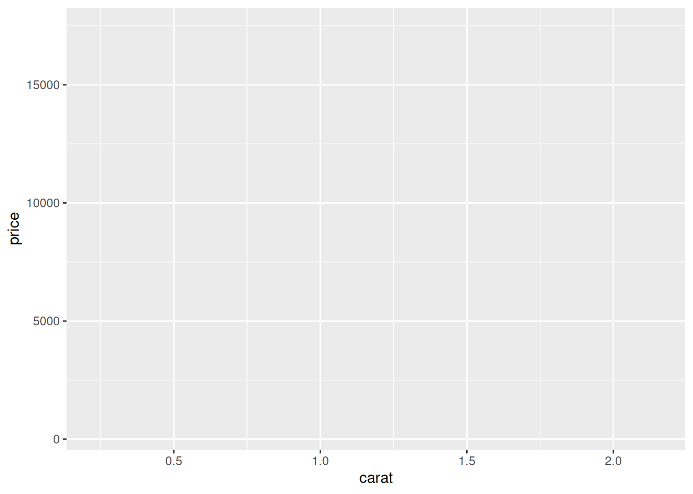
Jak widzimy, powstał nam pusty wykres. To jest właśnie układ współrzędnych, o którym mówiłem wcześniej.
Poza estetykami X i Y mamy do dyspozycji mnóstwo innych estetyk, m.in. colour, fill, alpha (przeźroczystość), size, linewidth, linetype, shape. Estetyki mają jedną wspólną cechę – są powiązane z jakimiś danymi. Jeśli stwierdzę, że wszystkie moje punkty mają być czerwone, to nie będzie to estetyka, tylko atrybut. O estetyce będę mógł mówić wtedy, gdy kolor będzie zależał np. od przejrzystości diamentu. To rozróżnienie, że atrybuty to stałe właściwości wyglądu, a estetyki to związek wyglądu z danymi, jest o tyle ważne, że nieco inaczej się je definiuje, jak zobaczymy za chwilę.
7.2 Obiekty geom_*
Pusty układ współrzędnych to jeszcze nie wykres. Musimy jeszcze dodać jakiegoś rodzaju geom. W naszym przypadku będą to punkty, gdzie każdy punkt będzie reprezentował inny brylant. Ściąga do ggplot2 zawiera świetną rozpiskę, jakie można stworzyć wykresy, w zależności od typu zmiennych, jakimi dysponujemy. Może się ona przydać nawet wtedy, gdy robimy wykresy w innym programie.
Do tworzenia wykresów punktowych mamy dwa rodzaje obiektów geom – geom_point i geom_jitter. geom_point to typowy wykres punktowy. geom_jitter przydaje się wtedy, kiedy mamy wiele danych o tych samych współrzędnych, np. wiele brylantów o masie dokładnie 0,2 karata i cenie dokładnie $ 300. W takim wypadku wszystkie te punkty nałożyłyby się na siebie, ukryły jeden pod drugim i wydawałoby się, że mamy mniej danych, niż w rzeczywistości mamy. geom_jitter rozwiązuje ten problem odrobinkę przesuwając każdy punkt w losowym kierunku. Lekko tracimy wtedy na dokładności, ale widzimy wszystkie nasze dane. Żeby do naszego wykresu dołożyć kolejne elementy, używamy znaku +.
ggplot(df_diamonds, aes(carat, price)) +
geom_point()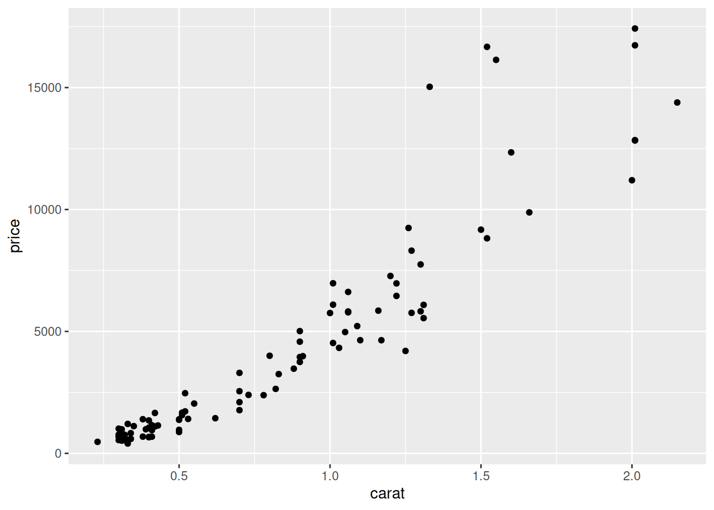
Wygląda na to, że im większy diament, tym droższy. Bez zaskoczenia. Możemy do naszego wykresy dołożyć linię trendu jako kolejny geom – geom_smooth. Jeśli chcemy mieć prostą linię, musimy ustawić argument method = "lm", co jest skrótem od linear model.
ggplot(df_diamonds, aes(carat, price)) +
geom_point() +
geom_smooth(method = "lm")#> `geom_smooth()` using formula = 'y ~ x'
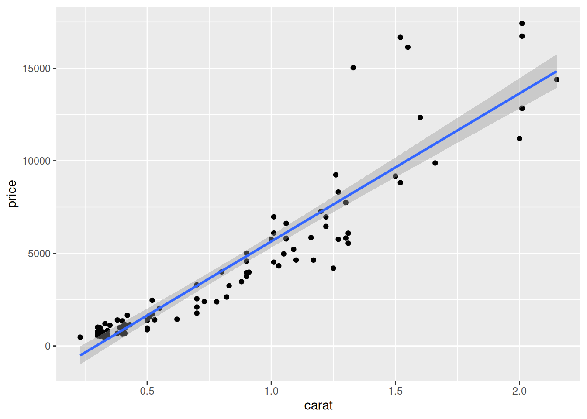
Szare pole wokół niebieskiej linii to przedział ufności. Możemy go wyłączyć ustawiając se = FALSE. Przy tej okazji powiedzmy sobie jeszcze raz o estetykach i atrybutach. Mogę chcieć, żeby kolor mojego punktu zależał od jakości wyszlifowania brylantu z kolumny cut. Ponieważ jest to związek wyglądu z danymi, to jest to estetyka i ustawiam ją wewnątrz aes. Mogę to aes wrzucić albo do funkcji ggplot, jak robiłem wcześniej, albo też do funkcji geom_point, bo to jej mapowanie dotyczy. Zwyczajowo argumenty X i Y w aes mogą być nienazwane, ale wszystkie inne już powinny. Mogę też zmienić kolor linii trendu z niebieskiego na czarny i zrobić ją trochę cieńszą. Jest to zmiana wyglądu, ale arbitralna, bez związku z danymi. Jest to więc atrybut i ustawiam go poza aes, wewnątrz funkcji, której ten atrybut dotyczy. Zobaczmy to.
ggplot(df_diamonds, aes(carat, price, colour = cut)) +
geom_point() +
geom_smooth(method = "lm", se = FALSE, linewidth = 0.5, colour = "black")#> `geom_smooth()` using formula = 'y ~ x'
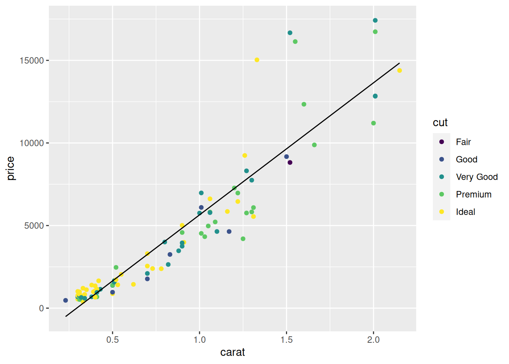
7.3 Tytuły osi i wykresu (labs)
Kolejną rzeczą, którą moglibyśmy chcieć zmienić, są tytuły osi. Możemy też dodać tytuł do samego wykresu. Najwygodniej jest to zrobić dodając kolejny element, labs, w którym dopiszemy nasze tytuły.
ggplot(df_diamonds, aes(carat, price, colour = cut)) +
geom_point() +
geom_smooth(method = "lm", se = FALSE, linewidth = 0.5, colour = "black") +
labs(
x = "Masa [karaty]",
y = "Cena [$]",
colour = "Szlif",
title = "Cena brylantu w zależności od masy"
)#> `geom_smooth()` using formula = 'y ~ x'
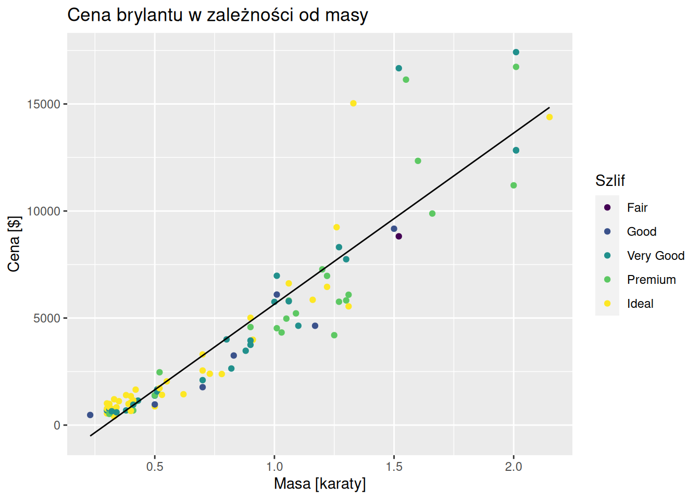
Jeśli chcemy zmienić etykiety wartości z legendy, mamy dwie opcje – albo przekodujemy te etykiety bezpośrednio w bazie danych, chociażby zaprzęgając do pracy questionr (zob. 5.5.1.1.1), albo użyjemy jednej z funkcji scale_*_discrete i jej argumentu labels, gdzie zamiast gwiazdki piszemy nazwę naszej estetyki. Szlif naszych diamentów jest zmapowany do estetyki colour, więc użyjemy funkcji scale_colour_discrete.
ggplot(df_diamonds, aes(carat, price, colour = cut)) +
geom_point() +
geom_smooth(method = "lm", se = FALSE, linewidth = 0.5, colour = "black") +
labs(
x = "Masa [karaty]",
y = "Cena [$]",
colour = "Szlif",
title = "Cena brylantu w zależności od masy"
) +
scale_colour_discrete(labels = c("Zadowalający", "Dobry", "Bardzo dobry", "Premium", "Idealny"))#> `geom_smooth()` using formula = 'y ~ x'
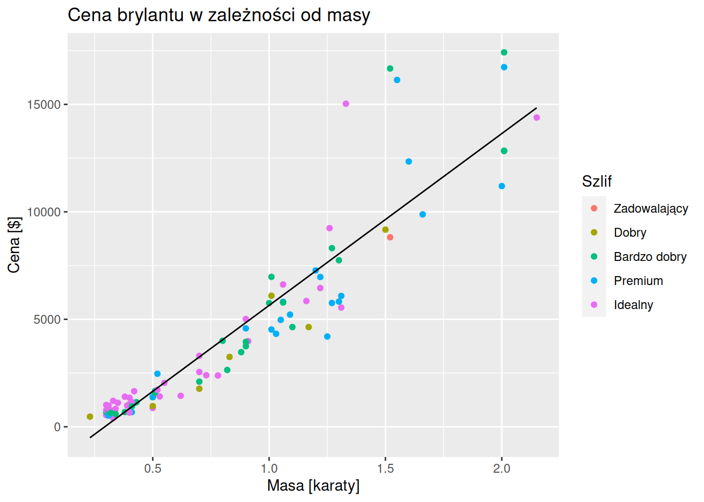
7.4 Wygląd wykresów (theme_*)
Wykres ma wszystkie elementy na miejscu, ale nie oszukujmy się, nie jest to dzieło sztuki. Żeby poprawić wygląd naszego wykresu, sięgniemy po dwa narzędzia. Po pierwsze ustalimy jego ogólny styl za pomocą jednego z motywów (themes), a potem poprawimy szczegóły z użyciem dodatku do RStudio esquisse.
Ogólny styl wykresu ustala się za pomocą elementów zaczynających się słówkiem theme_. ggplot2 ma wbudowane osiem takich motywów, które można przejrzeć tutaj. W Internecie roi się jednak od niestandardowych motywów, które mogą zaczarować nasze wykresy. Kluczowym ich źródłem może być pakiet ggthemes, motywy z którego można zobaczyć tutaj. Ja jednak chciałem pokazać dwa inne – theme_apa z pakietu papaja i theme_Publication z repozytorium na GitHubie koundy/ggplot_theme_Publication.
papaja to skrótowiec od Preparing APA Journal Articles i jest to rozległy pakiet pomagający pisać artykuły zgodne ze standardami Amerykańskiego Towarzystwa Psychologicznego (APA). Z tych standardów korzystają nie tylko psychologowie, ale też wiele czasopism z zakresu nauk przyrodniczych. Daje nam on dostęp m.in. do motywu theme_apa dostosowującego wykres do standardów APA.
library("papaja")
ggplot(df_diamonds, aes(carat, price, colour = cut)) +
geom_point() +
geom_smooth(method = "lm", se = FALSE, linewidth = 0.5, colour = "black") +
labs(
x = "Masa [karaty]",
y = "Cena [$]",
colour = "Szlif",
title = "Cena brylantu w zależności od masy"
) +
scale_colour_discrete(
labels = c("Zadowalający", "Dobry", "Bardzo dobry", "Premium", "Idealny")
) +
theme_apa()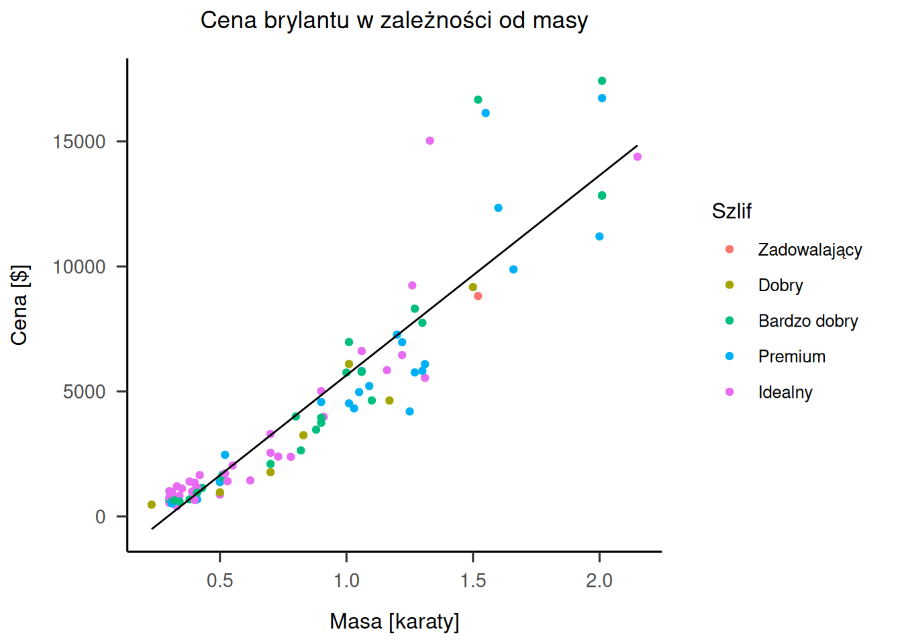
Drugi motyw nie jest szałowo popularny w społeczności, ale bardzo go lubię. Żeby zadziałał, musimy wcześniej zainstalować u siebie pakiety grid, scales i ggthemes. Spojrzenie w repozytorium pozwoli nam stwierdzić, że nie jest to pakiet, a po prostu zbiór plików. Wchodzimy więc w plik ggplot_theme_Publication-2.R, klikamy raw i kopiujemy link. Następnie użyjemy komendy source, która pozwala nam uruchamiać kod z innych plików .R w naszym skrypcie, jak podamy ich ścieżkę lub link do nich. Cały kod mógłby więc wyglądać tak:
source("https://raw.githubusercontent.com/koundy/ggplot_theme_Publication/master/ggplot_theme_Publication-2.R")
ggplot(df_diamonds, aes(carat, price, colour = cut)) +
geom_point() +
geom_smooth(method = "lm", se = FALSE, linewidth = 0.5, colour = "black") +
labs(
x = "Masa [karaty]",
y = "Cena [$]",
colour = "Szlif",
title = "Cena brylantu w zależności od masy"
) +
scale_colour_discrete(
labels = c("Zadowalający", "Dobry", "Bardzo dobry", "Premium", "Idealny"),
) +
theme_Publication()#> `geom_smooth()` using formula = 'y ~ x'
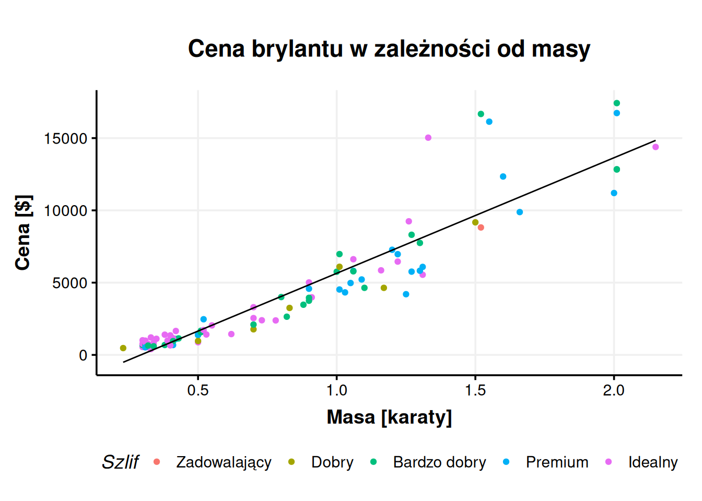
7.5 esquisse
Wykres w takiej formie można już uznać za zadowalający. Ale co jeśli chcemy poprawić jakieś szczegóły? Na przykład dostosować kolory? Są na to odpowiednie funkcje, ale jeśli mam być szczery, jest ich na tyle dużo, a w tutorialach tak bardzo przeplatają się stare i nowe metody, że bez gruntownego wyszkolenia (którego na przykład ja nie posiadam) bardzo łatwo jest się zgubić i bez zrozumienia kopiować kod znaleziony w Internecie. Na szczęście istnieje pewne narzędzie, które może nam w tej sytuacji pomóc. Nazywa się esquisse i jest dodatkiem do RStudio.
Instalujemy esquisse jak każdy inny pakiet (install.packages("esquisse")). Po zainstalowaniu, jeśli jest taka potrzeba, można spróbować zmienić język na polski komendą set_i18n("pl")31. Po zainstalowaniu pakietu, w menu Addins na górnej belce, powinniśmy uzyskać dostęp do opcji ggplot2 builder32, które jest narzędziem do interaktywnego konstruowania wykresów. Pozwala na stworzenie kodu w wygodnym, graficznym interfejsie. Polecam zapoznać się z tym interfejsem, ale nie będę go omawiał, ponieważ jest dość intiucyjny. Po wygenerowaniu naszego wykresu możemy skopiować gotowy kod do skryptu.
ggplot(df_diamonds) +
aes(x = carat, y = price, colour = clarity) +
geom_point(shape = "diamond", size = 2L) +
scale_color_brewer(palette = "YlOrRd", direction = 1) +
labs(
x = "Masa [karaty]",
y = "Cena [$]",
title = "Cena diamentów od ich masy według szlifu",
caption = "Źródło danych: ggplot2",
color = "Przejrzystość"
) +
theme_bw() +
theme(
legend.position = "bottom",
plot.title = element_text(face = "bold")
) +
facet_wrap(vars(cut))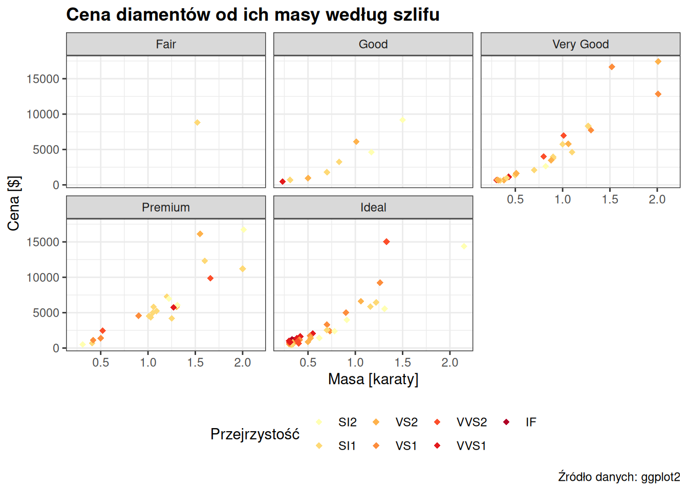
Powyżej wykres, który stworzyłem w equisse. Warto jednak zwrócić uwagę na jego niedoskonałości, takie jak brak polskich tłumaczeń typów szlifu. Pewnym wyjaśnieniem może być dla nas nazwa francuskiego słowa equisse – szkic. Takie narzędzia jak equisse nie zwalniają nas całkowicie z umiejętności kodowania wykresów, ale pozwalają wygodnie tworzyć szkice naszego kodu. Ten szkic mogę pozmieniać, np. zamieniając theme_bw na theme_Publication i dodając polskie tłumaczenia. Nieco inaczej, niż wcześniej, bo facet_wrap nie jest estetyką, więc sposób dodawania do niego niestandardowych etykiet znalazłem w dokumentacji.
ggplot(df_diamonds) +
aes(x = carat, y = price, colour = clarity) +
geom_point(shape = "diamond", size = 2L) +
scale_color_brewer(palette = "YlOrRd", direction = 1) +
labs(
x = "Masa [karaty]",
y = "Cena [$]",
title = "Cena diamentów od ich masy według szlifu",
caption = "Źródło danych: ggplot2",
color = "Przejrzystość"
) +
theme_Publication() +
theme(
legend.position = "bottom",
plot.title = element_text(face = "bold")
) +
facet_wrap(
vars(cut),
labeller = labeller(cut = c(
"Fair" = "Zadowalający",
"Good" = "Dobry",
"Very Good" = "Bardzo dobry",
"Premium" = "Premium",
"Ideal" = "Idealny"
)
)
)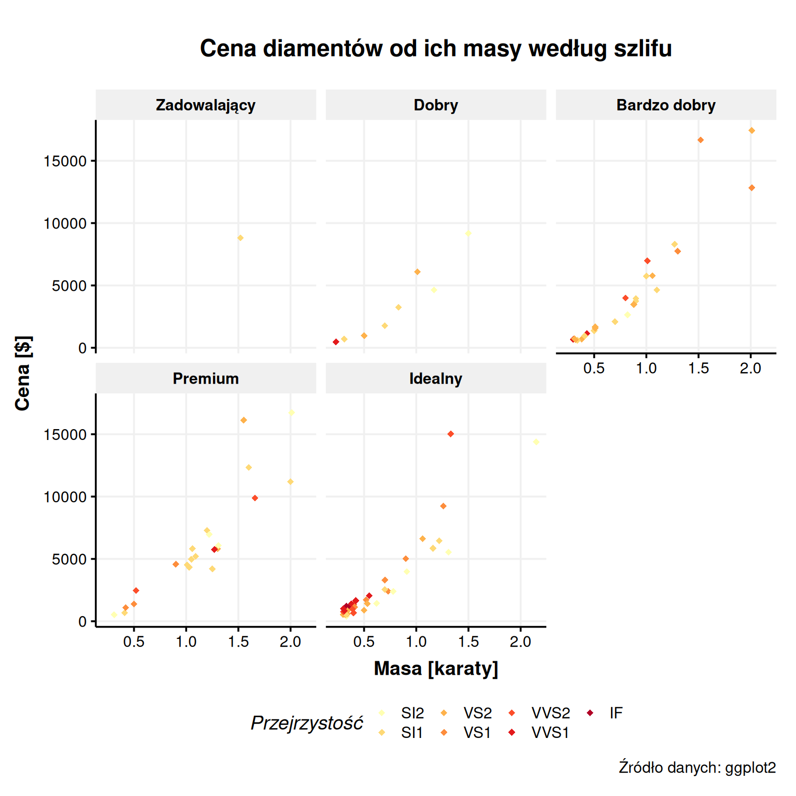
Wykresy to olbrzymi temat, który tutaj tylko liznęliśmy z wierzchu. Sądzę jednak, że ta wiedza wystarczy, żeby – z pomocą dokumentacji i Google – być w stanie powoli rozbudowywać swoje umiejętności z zakresu ggplot2. Zwłaszcza, że tworzenie dobrych wykresów do trudna sztuka, co skutecznie udowadnia plebiscyt na najgorszy wykres roku organizowany przez dr. Przemysława Biecka na jego stronie. W tym miejscu mogę polecić jego książkę „Wykresy od kuchni”, dostępną za darmo i okraszoną kodem R, który posłużył do wygenerowania jego wykresów.
8 Modele statystyczne
Największą trudnością nie jest tworzenie modeli statystycznych, tylko wiedza kiedy zrobić jaki test i jak je interpretować. Stąd też nie będę się tutaj rozwodził nad samymi testami, a omówię raczej ogólną specyfikę wykonywania testów statystycznych w R i wyświetlania ich wyników. Szczegóły co do tego, jak wykonywać konkretne testy, znajdują się w dokumentacji ich funkcji.
Modele statystyczne w R można ogólnie podzielić na te, które wykonuje się wprowadzając formuły i na te, w których wskazuje się kolumny. Fundamentalnym przykładem pierwszego typu jest funkcja do wykonywania regresji liniowej lm. Drugi typ reprezentuje np. test korelacji Pearsona cor.test.
Funkcja lm to prototyp modeli regresyjnych. W identyczny sposób, formułami, wykonujemy w R inne podstawowe modele takie jak ANOVA (aov). Funkcja wykonująca test t-Studenta również potrafi obsługiwać formuły. Także co to jest ta formuła? To szczególny typ wskazywania kolumn z użyciem znaku ~ (czyt. tylda). Jeśli chcielibyśmy wykonać regresję, w której sprawdzalibyśmy związek długości płatków irysa długością i szerokością jego działek kielicha (słynna, stara baza danych iris, dostępna automatycznie w R), zrobilibyśmy coś takiego:
# zerkamy w bazę
glimpse(iris)#> Rows: 150
#> Columns: 5
#> $ Sepal.Length <dbl> 5.1, 4.9, 4.7, 4.6, 5.0, 5.4, 4.6, 5.0, 4.4, 4.9, 5.4, 4.…
#> $ Sepal.Width <dbl> 3.5, 3.0, 3.2, 3.1, 3.6, 3.9, 3.4, 3.4, 2.9, 3.1, 3.7, 3.…
#> $ Petal.Length <dbl> 1.4, 1.4, 1.3, 1.5, 1.4, 1.7, 1.4, 1.5, 1.4, 1.5, 1.5, 1.…
#> $ Petal.Width <dbl> 0.2, 0.2, 0.2, 0.2, 0.2, 0.4, 0.3, 0.2, 0.2, 0.1, 0.2, 0.…
#> $ Species <fct> setosa, setosa, setosa, setosa, setosa, setosa, setosa, s…
# tworzymy model
lm_price <- iris %>%
lm(Petal.Length ~ Sepal.Length + Sepal.Width, data = .)
# próbujemy wyświetlić
lm_price#>
#> Call:
#> lm(formula = Petal.Length ~ Sepal.Length + Sepal.Width, data = .)
#>
#> Coefficients:
#> (Intercept) Sepal.Length Sepal.Width
#> -2.525 1.776 -1.339
Obiekty tego typu zawsze wymagają argumentu data. Dlaczego jednak zapisałem data = .? Problem polega tutaj na użyciu potoków. Standardowo potok %>% wrzuca rzeczy do pierwszego argumentu. Wiele funkcji, tak jak lm, nie przyjmuje bazy danych w pierwszym argumencie. Często nawet nie w drugim, więc najlepiej wprost go nazwać. Omawiany w podrozdziale 8.2 pakiet rstatix za pierwszy cel postawił sobie nawet przerobienie testów statystycznych tak, żeby lepiej współpracowały z potokami. Jak więc poradzić sobie w takiej sytuacji? Jedna opcja, to całkiem zrezygnować z potoków i zapisać data = iris. Tak też jest dobrze, ale co jeśli potrzebujemy użyć potoku? Na przykład przed stworzeniem modelu wykonujemy serię przekształceń danych? Warto pamiętać, że potoki nie są obowiązkowe, można równie dobrze zagnieżdżać funkcje. Cierpi na tym tylko czytelność kodu. Druga opcja, to wprost powiedzenie potokowi, gdzie ma wrzucić naszą bazę danych. Do tego właśnie służy .. Zapis data = . mówi potokowi „halo halo, proszę nie wrzucać bazy do pierwszego argumentu, tylko o tu, gdzie pokazałem(-am) kropką”.
W powyższym przykładzie widać też, że lm, podobnie jak wiele innych obiektów modeli, nie daje nam domyślnie sensownego podsumowania. Wiele modeli wymaga od nas, byśmy wrzucili je do funkcji summary (nie mylić z summarise) żeby powiedziały nam coś, co da się zrozumieć.
summary(lm_price)#>
#> Call:
#> lm(formula = Petal.Length ~ Sepal.Length + Sepal.Width, data = .)
#>
#> Residuals:
#> Min 1Q Median 3Q Max
#> -1.25582 -0.46922 -0.05741 0.45530 1.75599
#>
#> Coefficients:
#> Estimate Std. Error t value Pr(>|t|)
#> (Intercept) -2.52476 0.56344 -4.481 1.48e-05 ***
#> Sepal.Length 1.77559 0.06441 27.569 < 2e-16 ***
#> Sepal.Width -1.33862 0.12236 -10.940 < 2e-16 ***
#> ---
#> Signif. codes: 0 '***' 0.001 '**' 0.01 '*' 0.05 '.' 0.1 ' ' 1
#>
#> Residual standard error: 0.6465 on 147 degrees of freedom
#> Multiple R-squared: 0.8677, Adjusted R-squared: 0.8659
#> F-statistic: 482 on 2 and 147 DF, p-value: < 2.2e-16
Ten widok już jest możliwy do zinterpretowania. Jeśli wiemy co nieco o regresjach, możemy z niego odczytać, że oba predyktory są istotne statystycznie, podobnie jak statystyka \(F\), a także że wyjaśniliśmy \(R^2 = 87\%\) wariancji. Nie jest to jednak najlepszy format wyświetlania wyników.
8.1 Czyste wyniki, czyli pakiet broom
Dlaczego nie jest to dobry format? Bo jest niejednolity i chaotyczny. Nie tylko w widocznej postaci, ale też pod maską, co przeszkadza nam, kiedy chcemy wejść głębiej z programowaniem albo pisać automatyczne raporty. Niestandardowe wykresy również mogą być wtedy problemem. Odpowiedzią na te problemy stał się pakiet broom. Należy on do świata tidyverse, ale nie jest ładowany z pakietem tidyverse, więc trzeba załadować go ręcznie. Rdzeniem tego pakietu jest specjalny słownik, standard tworzenia modeli, w którym kolumny zawierające określone informacje muszą nazywać się w określony sposób. Kolumny, bo wyczyszczony model ma zawsze postać tabeli. Dla przykładu kolumna z wartością \(p\) zawsze musi nazywać się p.value, a kolumna z wartością współczynnika – estimate. Wymusza to spójność i zapewnia przewidywalność obiektów zawierających modele. Wiele współczesnych pakietów do modelowania od razu dostosowuje swoje modele do wymogów czystych danych.
broom nie jest jednak tylko standardem – to także pakiet zawierający trzy funkcje czyszczące modele. Co więcej zawsze są to te same trzy funkcje, które zawsze przyjmują tak samo nazywające się argumenty. Ta spójność i zapewnienie spójności to najlepsze, co daje nam broom. Omówmy sobie teraz te trzy funkcje i zobaczmy je w akcji.
8.1.1 glance
Pierwszą funkcją czyszczącą jest glance (nie mylić z glimpse). Służy ona do tworzenia czystych opisów samego modelu w pojedynczym wierszu. Będą to takie rzeczy jak statystyka \(F\) czy \(R^2\). Jak każda funkcja broom, jako pierwszy argument przyjmuje ona nasz model.
library("broom")
glance(lm_price)#> # A tibble: 1 × 12
#> r.squared adj.r.squa…¹ sigma stati…² p.value df logLik AIC BIC devia…³
#> <dbl> <dbl> <dbl> <dbl> <dbl> <dbl> <dbl> <dbl> <dbl> <dbl>
#> 1 0.868 0.866 0.646 482. 2.74e-65 2 -146. 300. 312. 61.4
#> # … with 2 more variables: df.residual <int>, nobs <int>, and abbreviated
#> # variable names ¹adj.r.squared, ²statistic, ³deviance
Widzimy tutaj ogólne podsumowanie skuteczności naszego modelu z całą serią statystyk. Co ciekawe mamy też takie statystyki jak AIC i BIC, których summary nie wyświetla. W ten sposób broom nie tylko czyści nasz model, ale także dostarcza nam nowych informacji.
8.1.2 tidy
Funkcja tidy wyświetla nam najważniejsze elementy modelu. Dla wszelkich regresji będą to przede wszystkim współczynniki regresji, choć dokładna zawartość wynikowej tabeli naturalnie zależy od tego, jaki model czyściliśmy. Zobaczmy to.
tidy(lm_price)#> # A tibble: 3 × 5
#> term estimate std.error statistic p.value
#> <chr> <dbl> <dbl> <dbl> <dbl>
#> 1 (Intercept) -2.52 0.563 -4.48 1.48e- 5
#> 2 Sepal.Length 1.78 0.0644 27.6 5.85e-60
#> 3 Sepal.Width -1.34 0.122 -10.9 9.43e-21
Widzimy więc, że oba współczynniki (estimate) są istotne statystycznie, z czego długość działki kielicha ma współczynnik dodatni, a szerokość ujemny.
8.1.3 augment
Ostania funkcja czyszcząca nie do końca cokolwiek czyści. Pozwala ona na dodanie do oryginalnej bazy danych informacji zaczerpniętych z modelu, m.in. jaką wartość przewiduje model dla tego przypadku, jaka jest wartość resztkowa (residual), zwykła i standaryzowana, jaki jest dystans Cooka i hat value itd. Dokładne możliwości funkcji augment zależą od rodzaju modelu. Są to informacje użyteczne chociażby kiedy chcemy zidentyfikować outliery. Wszystkie dodane kolumny mają nazwy zaczynające się kropką.
augment(lm_price)#> # A tibble: 150 × 9
#> Petal.Length Sepal.…¹ Sepal…² .fitted .resid .hat .sigma .cooksd .std.r…³
#> <dbl> <dbl> <dbl> <dbl> <dbl> <dbl> <dbl> <dbl> <dbl>
#> 1 1.4 5.1 3.5 1.85 -0.446 0.0177 0.648 2.91e-3 -0.695
#> 2 1.4 4.9 3 2.16 -0.760 0.0159 0.646 7.54e-3 -1.18
#> 3 1.3 4.7 3.2 1.54 -0.237 0.0196 0.648 9.15e-4 -0.370
#> 4 1.5 4.6 3.1 1.49 0.00677 0.0218 0.649 8.34e-7 0.0106
#> 5 1.4 5 3.6 1.53 -0.134 0.0222 0.649 3.34e-4 -0.210
#> 6 1.7 5.4 3.9 1.84 -0.143 0.0324 0.649 5.63e-4 -0.225
#> 7 1.4 4.6 3.4 1.09 0.308 0.0243 0.648 1.94e-3 0.483
#> 8 1.5 5 3.4 1.80 -0.302 0.0167 0.648 1.25e-3 -0.471
#> 9 1.4 4.4 2.9 1.41 -0.00584 0.0292 0.649 8.43e-7 -0.00917
#> 10 1.5 4.9 3.1 2.03 -0.526 0.0154 0.647 3.50e-3 -0.820
#> # … with 140 more rows, and abbreviated variable names ¹Sepal.Length,
#> # ²Sepal.Width, ³.std.resid
8.2 Swiss Army Knife w R, czyli rstatix
Niezwykłe możliwości i giętkość pakietu rstatix były już w tym tekście wychwalane i pokazywane. Tutaj jednak chciałbym powiedzieć o głównej zawartości rstatix czy funkcjach wykonujących testy statystyczne.
R posiada dużą bibliotekę domyślnych funkcji do testów statystycznych, takich jak t.test czy cor.test. I one liczą dobrze, ale w wielu przypadkach są niewygodne. Nie ma się co dziwić, to są stare funkcje, swoją historią sięgające roku 2000, czyli początków R. Nie było wtedy dplyr, RStudio, potoków i całego dobrodziejstwa, które sprawia, że współczesny kod R średnio przypomina klasyczny kod, którego tu nie omawiam, ale który ciągle działa i buduje fundamenty tego języka. Dlatego właśnie wyniki tych testów są niewystandaryzowane, wymagają one niewygodnego wskazywania kolumn jako wektorów33 i mają argument data na drugim miejscu, przez co potoki zawsze wymagają używania ..
rstatix jest odpowiedzią na te problemy. Poza tym, że dodaje mnóstwo przyjaznych funkcji od siebie, to uwspółcześnia stare funkcje, naprawiając w nich wszystko, co złe, m.in. poprawiając pracę z potokami. Dodatkowo wykorzystuje sprytną nomenklaturę, która ułatwia uczenie się – jeśli w klasycznym R funkcja nazywa się t.test, to w rstatix nazywa się t_test, cor.test zmienia się w cor_test i tak dalej. Jest to zgodne z ogólnym standarem tidyverse, żeby współczesne funkcje zawsze były pisane snake_case (więcej o formatowaniu kodu w podrozdziale 9). Większość funkcji pozwala też na wykonywanie wielu testów jednocześnie i radzi sobie ze zgrupowanymi danymi.
# test korelacji Pearsona
cor_test(diamonds, price, carat)#> # A tibble: 1 × 8
#> var1 var2 cor statistic p conf.low conf.high method
#> <chr> <chr> <dbl> <dbl> <dbl> <dbl> <dbl> <chr>
#> 1 price carat 0.92 551. 0 0.920 0.923 Pearson
# test t-Studenta
t_test(df_scream, screams ~ songwriter)#> # A tibble: 1 × 8
#> .y. group1 group2 n1 n2 statistic df p
#> * <chr> <chr> <chr> <int> <int> <dbl> <dbl> <dbl>
#> 1 screams Andy Malcolm 34 34 2.70 62.2 0.0089
# test korelacji na zgrupowanych danych
iris %>%
group_by(Species) %>%
cor_test(Sepal.Length, Sepal.Width)#> # A tibble: 3 × 9
#> Species var1 var2 cor stati…¹ p conf.…² conf.…³ method
#> <fct> <chr> <chr> <dbl> <dbl> <dbl> <dbl> <dbl> <chr>
#> 1 setosa Sepal.Length Sepal.W… 0.74 7.68 6.71e-10 0.585 0.846 Pears…
#> 2 versicolor Sepal.Length Sepal.W… 0.53 4.28 8.77e- 5 0.290 0.702 Pears…
#> 3 virginica Sepal.Length Sepal.W… 0.46 3.56 8.43e- 4 0.205 0.653 Pears…
#> # … with abbreviated variable names ¹statistic, ²conf.low, ³conf.high
# ANOVA
anova_test(diamonds, price ~ cut + color + clarity)#> ANOVA Table (type II tests)
#>
#> Effect DFn DFd F p p<.05 ges
#> 1 cut 4 53922 93.715 1.42e-79 * 0.007
#> 2 color 6 53922 298.044 0.00e+00 * 0.032
#> 3 clarity 7 53922 192.094 1.30e-282 * 0.024
# testy post-hoc
tukey_hsd(diamonds, price ~ cut + color + clarity)#> # A tibble: 59 × 9
#> term group1 group2 null.value estim…¹ conf.…² conf.…³ p.adj p.adj…⁴
#> * <chr> <chr> <chr> <dbl> <dbl> <dbl> <dbl> <dbl> <chr>
#> 1 cut Fair Good 0 -430. -732. -128. 9.86e- 4 ***
#> 2 cut Fair Very Good 0 -377. -656. -97.9 2.13e- 3 **
#> 3 cut Fair Premium 0 225. -51.5 503. 1.72e- 1 ns
#> 4 cut Fair Ideal 0 -901. -1173. -629. 6.68e-14 ****
#> 5 cut Good Very Good 0 52.9 -125. 231. 9.28e- 1 ns
#> 6 cut Good Premium 0 655. 481. 830. 4.22e-14 ****
#> 7 cut Good Ideal 0 -471. -638. -305. 1.4 e-13 ****
#> 8 cut Very Good Premium 0 602. 471. 734. 0 ****
#> 9 cut Very Good Ideal 0 -524. -644. -405. 0 ****
#> 10 cut Premium Ideal 0 -1127. -1241. -1012. 0 ****
#> # … with 49 more rows, and abbreviated variable names ¹estimate, ²conf.low,
#> # ³conf.high, ⁴p.adj.signif
# wielkość efektu d Cohena
cohens_d(df_scream, screams ~ songwriter)#> # A tibble: 1 × 7
#> .y. group1 group2 effsize n1 n2 magnitude
#> * <chr> <chr> <chr> <dbl> <int> <int> <ord>
#> 1 screams Andy Malcolm 0.655 34 34 moderate
# wielkość efektu eta^2
diamonds %>%
aov(price ~ cut + color + clarity, .) %>%
eta_squared()#> cut color clarity
#> 0.01286207 0.02971211 0.02329457
Dodatkowo rstatix dostarcza nam wygodą funkcję add_significance, która do obiektu z modelem zgodnym z broom dodaje kolumnę z gwiazdkami istotności wartości \(p\). Domyślne ustawienia są takie same jak dla funkcji cor_mark_significance34 i również można je modyfikować (por. 6.3).
lm_price %>%
tidy() %>%
add_significance()#> # A tibble: 3 × 6
#> term estimate std.error statistic p.value p.value.signif
#> <chr> <dbl> <dbl> <dbl> <dbl> <chr>
#> 1 (Intercept) -2.52 0.563 -4.48 1.48e- 5 ****
#> 2 Sepal.Length 1.78 0.0644 27.6 5.85e-60 ****
#> 3 Sepal.Width -1.34 0.122 -10.9 9.43e-21 ****
Nie są to wszystkie funkcje, które oferuje rstatix i zachęcam do zerknięcia do repozytorium rstatix na GitHubie, gdzie autor umieścił długą listę dostępnych funkcji ze streszczeniem ich działania.
9 Formatowanie kodu
Ostatnia rzecz, którą chciałbym napisać w tym tekście, dotyczy formatowania kodu. Powiedzmy sobie szczerze – czytanie kodu jest trudne, choć tidyverse już i tak to mocno ułatwia. Gdy piszemy kod, powinniśmy mieć w głowie, że ktoś go kiedyś będzie czytał, gdzie tym ktosiem możemy być nawet przyszli my. Budzi to potrzebę, żeby kod wyglądał dobrze, przestrzegał pewnych standardów, aby był zrozumiały i spójny. Poza tym istnieje seria dobrych praktyk, które między innymi zwiększają czytelność kodu. Kod jest (lub bywa) giętki przyjmie wiele rzeczy i nawet brzydki będzie działał. Dla przykładu, jeśli tam, gdzie powinno być TRUE napiszemy 1, to kod i tak zadziała, bo głęboko pod maską TRUE to takie fancy 1, ale nie powinniśmy tego robić. Jest to szczególnie ważne, kiedy piszemy kod z kimś. Jeśli nie mamy jednolitych standardów, chociażby wewnętrznych, to nagle może się okazać, że kod działa, ale potrafi być niespójny nawet w obrębie pojedynczego pliku.
set.seed(123)
(rep(round(runif(5,1,10),0),times=2,each=3)->My.own_NUMBERS)#> [1] 4 4 4 8 8 8 5 5 5 9 9 9 9 9 9 4 4 4 8 8 8 5 5 5 9 9 9 9 9 9
Powyższy kod działa, czyli spełnia swoją funkcję, ale wygląda paskudnie. Sprawia to, że jeśli się nie wie, co ten kod robi, to jest to ciężko rozszyfrować. Jednak wszystko staje się prostsze, jeśli napiszemy go w sposób czystszy.
set.seed(123)
(my_own_numbers <- runif(5, min = 1, max = 10) %>% # wylosuj 5 liczb między 1 a 10
round(0) %>% # zaokrąglij do całości
rep(times = 2, each = 3)) # każdą powtórz 3 razy, a całość 2 razy#> [1] 4 4 4 8 8 8 5 5 5 9 9 9 9 9 9 4 4 4 8 8 8 5 5 5 9 9 9 9 9 9
Kod ten od razu jest czytelniejszy, milszy dla oka, mimo że efekt jego działania jest identyczny. Sądzę, że łatwiej jest od razu nasiąkać dobrymi praktykami i standardami, od samego początku nauki, niż potem rugować złe przyzwyczajenia. A skąd mamy wiedzieć, jakie to są „dobre praktyki”? Cóż, standardy wewnętrzne to jedna sprawa, ale takie standardy trzeba ustalać w każdym zespole od nowa. Na szczęście istnieje pewna baza, fundament, standard który – według mnie – powinna znać każda osoba programująca w R, czyli standard tidyverse. Jeśli znamy te standardy, możemy je potraktować jako bazę dla standardów wewnętrznych. Nie umówiliśmy się, jak powinien wyglądać ten kod? To napiszę zgodnie ze standardem. Jeśli z powodu osobistej preferencji odchodzimy od standardów, robimy to wtedy świadomie. Poradnik formatowania kodu zgodnie z tidyverse znajdziemy tutaj.
Pamiętanie o wszystkich standardach podczas pisania kodu jest trudne, zwłaszcza na początku. Na szczęście mamy narzędzia, które nam w tym pomogą.
9.1 styler
Pierwszy z tych narzędzi to styler, który sam poprawia wiele aspektów kodu, w tym wiele oczywistych błędów. Instalujemy go jak każdy inny pakiet (install.packages("styler")). Po zainstalowaniu menu Addins wzbogaca się o kilka opcji, z których najważniejsza to style active file35. Podczas pracy uruchamiam to co jakiś czas i zazwyczaj znajdują się jakieś przeoczenia.

styler9.2 lintr
styler nie poprawia wszystkich błędów, bo byłoby to zbyt destrukcyjne. Na szczęście lintr może nam większość z nich wypomnieć. Dla każdego naszego projektu powinniśmy raz uruchomić komendę lintr::use_lintr(type = "tidyverse"). Spowoduje to wytworzenie w folderze pliku o nazwie .lintr. Zawiera on konfigurację lintr dla danego projektu. Za jego pomocą będziemy mogli tę konfigurację również zmieniać.
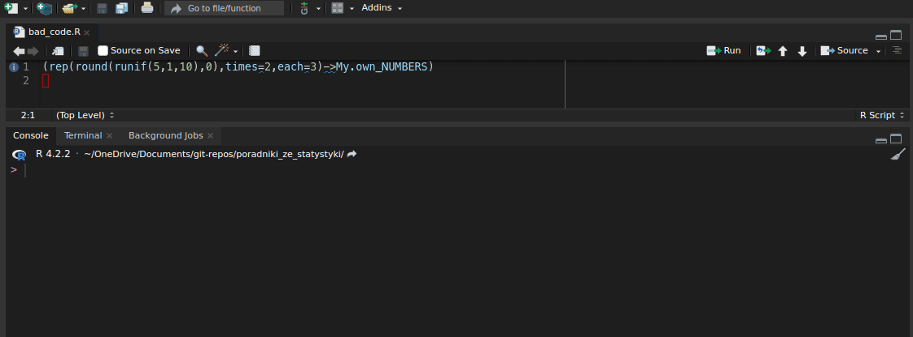
lintrZmiana dokonuje się przez wpisanie do pliku .lintr36 odpowiednich opcji. Szczegóły omawia dokumentacja (vignette("lintr")), ale na pewno chciałbym wskazać jedną, której zmiana jest wręcz konieczna. Domyślnie lintr uznaje za za długie linie powyżej 80 znaków. To jest strasznie mało! Ja zazwyczaj ustawiam ten limit to na 120-150 znaków. Zmodyfikujmy to. Domyślna zawartość pliku .lintr wygląda tak:
linters: linters_with_defaults()
encoding: "UTF-8"By zmienić limit znaków, należy przekształcić go w ten sposób:
linters: linters_with_defaults(
line_length_linter(120)
)
encoding: "UTF-8"Gdzie 120 to nowy limit znaków. W podobny sposób możemy zmienić wymagany styl nazywania obiektów. Standardem tidyverse jest snake_case, czyli nazywanie małymi literami, oddzielając słowa podkreślnikiem. Poza tym wyróżniamy jeszcze camelCase, czyli każde słowo składowe wielką literą poza pierwszym, PascalCase, czyli każde słowo wielką literą (choć czasem Pascal case też nazywa się camel case lub upper camel case), kebab-case, czyli oddzielanie słów myślnikiem i dot.notation, czyli oddzielanie słów kropką, żeby wymienić te bardziej znane. Żaden ze stylów nie jest zły, jednal jak już się zdecydujemy na jeden, powinniśmy się go trzymać.
Oba te pakiety, lintr i styler, są bardzo użyteczne, jednak ostatecznie nie zastępują ludzkiej decyzji. Nie wystarczy więc tylko mieć te pakiety, trzeba też – choć pobieżnie – znać same standardy.
10 Debugowanie
W założeniu powyższe podrozdziały mają być wystarczającym wprowadzeniem, żeby zacząć pisać analizy w R. Jednak przeczytanie i przećwiczenie tego materiału nie oznacza, że będzie się to robić bezbłędnie. Specyfika programowania w ogóle, niezależnie czy jest to R, Python, C czy nawet Scratch37, polega na tym, że czasem popełniamy błędy i z tego wynikają problemy, które musimy naprawić. W żargonie taki błąd określilibyśmy angielskim mianem bug, zaś proces usuwania takich błędów debugowaniem.
Debugowanie to czynność, na której będziemy spędzać sporo czasu, zwłaszcza na początku. Im więcej doświadczenia z językiem, tym mniej się bugów generuje, ale nigdy nie będziemy pisać bezbłędnie. Popełnianie błędów nie świadczy, że ktoś źle rozumie język. Doświadczenie sprawia tylko, że piszemy bardziej skomplikowany kod i popełniamy bardziej wysublimowane błędy. Ba! Proste błędy też popełniamy, ale w ramach doświaczenia mamy często już wypracowane sposoby, by sobie z konkretnymi błędami radzić. Będziemy pamiętali, jak poradziliśmy sobie z podobnym problemem ostatnim razem. Czasem nawet specjalnie piszmey błędny kod, żeby sprawdzić, co się stanie. Na każdym etapie możemy sprawdzić, czy kod działa, nie musząc czekać, aż będziemy pewni, że napisaliśmy to dobrze. Nie bójmy się popełniać błędów!
10.1 Diagnoza
Możemy roboczo podzielić bugi na dwa rodzaje – takie, które nie pozwalają na wykonanie kodu i takie, przy których kod się wykonuje, ale efekt nie jest taki, jak chcemy, żeby był. Pierwszy rodzaj błędu jest o tyle prosty w zauważeniu, że konsola zacznie na nas krzyczeć na czerwono informatycznym żargonem, jeśli taki błąd popełnimy. Do tej kategorii wpadną wszystkie literówki, błędy składniowe, niewłaściwy typ argumentu itd. Druga kategoria błędów jest bardziej podstępna, bo możemy je zawuażyć 100 linijek od miejsca, w którym rzeczywiście zrobiliśmy coś nie tak. A potem musimy szukać.
Proces debugowania zawsze zaczyna się od zauważenia błędu i dzieje się to zazwyczaj w konsoli. Na niektóre błędy (np. niektóre literówki) zostaną nam pokazane już przez edytor kodu, ale zazwyczaj dopiero wykonanie jakiegoś kodu pozwoli nam zauważyć, że jest on błędny. Zobaczmy sobie przykład, gdzie będziemy chcieli zainstalować pakiet ViewPipeSteps, który przyda nam się potem.
install.packages(ViewPipeSteps)#> Error in install.packages(ViewPipeSteps): nie znaleziono obiektu 'ViewPipeSteps'
Jeśli uruchominy ten kod, otrzymamy błąd. Komunikatów o błędach nie należy się bać, bo są bezcennym źródłem informacji na temat tego, co się dzieje. Konsola stara się poinformować nas gdzie popełniliśmy błąd i jakiego rodzaju jest to błąd. Tutaj otrzymaliśmy komunikat object 'ViewPipeSteps' not found. Widzimy więc, że komenda szuka zmiennej o nazwie ViewPipeSteps i jej nie znajduje. Wtedy możemy się zorientować, że my rzeczywiście nie mamy takiej zmiennej, bo to w ogóle nie ma być zmienna, tylko nazwa pakietu do zainstalowania. A jak nazwa, to dosłowny ciąg znaków. A więc powinniśmy napisać tak:
install.packages("ViewPipeSteps")Ale wpadłem na to, bo już mi się to przydarzyło. To, swoją drogą, częsty błąd, branie w cudzysłów rzeczy, które nie powinny być w cudzysłowie albo odwrotnie, brak cudzysłowia, gdy powinien być on obecny. O tym, jak wpaść na rozwiązanie, piszę więcej niżej. Tutaj jednak warto zwrócić uwagę na sam komunikat błędu.
df %>%
selcet(H_1:H_3)#> Error in selcet(., H_1:H_3): nie udało się znaleźć funkcji 'selcet'
Powyższa komenda zwraca błąd could not find function "selcet", co może zdarzyć się w dwóch sytuacjach – nie załadowaliśmy pakietu, w którym ta funkcja się znajduje, albo zrobiliśmy literówkę. Tutaj uważne przeczytanie wskazuje na tę drugą ewentualność, zamieniłem literki miejscami.
df %>%
mutate(
H_suma = sum(pick(H_1:H_10)),
.after = id
)#> # A tibble: 45 × 15
#> id wiek wyksztal…¹ H_suma H_1 H_2 H_3 H_4 H_5 H_6 H_7 H_8
#> <dbl> <dbl> <ord> <dbl> <dbl> <dbl> <dbl> <dbl> <dbl> <dbl> <dbl> <dbl>
#> 1 54 21 Wyższe 1932 5 5 5 5 2 5 2 5
#> 2 33 22 Wyższe 1932 5 5 4 5 2 5 2 5
#> 3 30 23 Wyższe 1932 6 5 5 5 2 5 3 5
#> 4 49 23 Wyższe 1932 6 6 6 6 1 6 1 6
#> 5 31 24 Wyższe 1932 3 4 4 4 3 4 4 4
#> 6 38 25 Wyższe 1932 5 5 5 5 2 5 2 5
#> 7 46 25 Wyższe 1932 5 5 1 5 2 1 3 5
#> 8 43 26 Wyższe 1932 6 6 6 6 1 6 1 6
#> 9 35 29 Wyższe 1932 6 6 6 6 1 6 1 6
#> 10 2 52 Wyższe 1932 5 5 5 5 2 5 2 5
#> # … with 35 more rows, 3 more variables: H_9 <dbl>, H_10 <dbl>,
#> # wyksztalcenie_grupa <chr>, and abbreviated variable name ¹wyksztalcenie
Powyższy przykład na nas nie krzyczy, wykonuje się, jednak nie działa tak, jak byśmy chcieli. Celem tego kodu było uzyskanie sumy kolumn od H1 do H10 dla każdej osoby badanej, jak robiliśmy w podrozdziale 5.4.1. Jednak kod nie działa tak, jak byśmy chcieli. W każdej komórce kolumny H_suma znajduje się ta sama wartość. Zaskakująco duża. Wynika to z tego, że R domyślnie myśli kolumnami, nie wierszami. Gdy więc każemy mu sumować kolumny od H1 do H10, to sumuje całe kolumny i w każdą komórkę wrzuca tę sumę. Jeśli chcemy policzyć sumę dla każdego wiersza z osobna, to musimy albo użyć funkcji rowSums zamiast zwykłego sum, albo wcześniej przepuścić przez funkcję rowwise(), czego nie robiliśmy wcześniej.
df %>%
rowwise() %>%
mutate(
H_suma = sum(pick(H_1:H_10)),
.after = id
)#> # A tibble: 45 × 15
#> # Rowwise:
#> id wiek wyksztal…¹ H_suma H_1 H_2 H_3 H_4 H_5 H_6 H_7 H_8
#> <dbl> <dbl> <ord> <dbl> <dbl> <dbl> <dbl> <dbl> <dbl> <dbl> <dbl> <dbl>
#> 1 54 21 Wyższe 44 5 5 5 5 2 5 2 5
#> 2 33 22 Wyższe 43 5 5 4 5 2 5 2 5
#> 3 30 23 Wyższe 45 6 5 5 5 2 5 3 5
#> 4 49 23 Wyższe 45 6 6 6 6 1 6 1 6
#> 5 31 24 Wyższe 39 3 4 4 4 3 4 4 4
#> 6 38 25 Wyższe 44 5 5 5 5 2 5 2 5
#> 7 46 25 Wyższe 33 5 5 1 5 2 1 3 5
#> 8 43 26 Wyższe 45 6 6 6 6 1 6 1 6
#> 9 35 29 Wyższe 50 6 6 6 6 1 6 1 6
#> 10 2 52 Wyższe 44 5 5 5 5 2 5 2 5
#> # … with 35 more rows, 3 more variables: H_9 <dbl>, H_10 <dbl>,
#> # wyksztalcenie_grupa <chr>, and abbreviated variable name ¹wyksztalcenie
Ostatecznie orientujemy się, że gdzieś w naszym kodzie jest błąd i musimy go rozwiązać. Musimy jednak wiedzieć dokładnie jaka funkcja ten błąd powoduje. Jeśli jest to błąd uniemożliwiający wykonanie kodu, konsola postara się nas poinformować, gdzie ten błąd się znajduje. Gorzej w przypadku drugiej kategorii błędów. Tutaj musimy mocniej się postarać. Czytanie kodu to podstawowa metoda, ale mamy też narzędzia, które mogą nam w tym pomóc.
10.1.1 ViewPipeSteps
Gdy piszemy całą serię funkcji połączonych potokami, możemy mieć problem ze zidentyfikowaniem, gdzie popełniliśmy błąd. Może się okazać, że w rzeczywistości błąd popełniliśmy kilka linijek wyżej, a nie w funkcji, która ten błąd zwraca. Spójrzmy na uproszczony przykład.
df %>%
select(id, H_1:H_10) %>%
filter(wiek > 40)#> Error in `filter()`:
#> ℹ In argument: `wiek > 40`.
#> Caused by error:
#> ! nie znaleziono obiektu 'wiek'
Błąd zwraca nam tutaj funkcja filter, jednak błąd popełniliśmy w funkcji select – nie możemy odfiltrować osób w wieku powyżej 40 roku życia, jeśli w naszej bazie nie ma już kolumny wiek. Tutaj możemy to szybko zauważyć, ale w dłuższych ciągach potoków może nie być to takie oczywiste. Zazwyczaj zacznaczamy wtedy kolejne kroki i patrzymy jak nasza baza się zmienia.
# Najpierw uruchamiamy to
df
# Potem to
df %>%
select(id, H_1:H_10)
# Na koniec to
df %>%
select(id, H_1:H_10) %>%
filter(wiek > 40)Zazwyczaj robimy to ręcznie, ale mamy też użyteczne narzędzie służące właśnie wyświetleniu kolejnych kroków ciągu potoków. Jest to dodatek do RStudio ViewPipeSteps. Po zainstalowaniu możemy wykorzystać to narzędzie zaznaczając swój ciąg i wybierając odpowiednią opcję z menu Addins. Otworzy to w kolejnych kartach (albo wydrukuje konsoli) kolejne kroki ciągu funkcji połączonych potokami. Często pozwala to na zidentyfikowanie kroku, w którym pojawia się błąd.
10.1.2 Metoda gumowej kaczuszki
To zabrzmi jak żart, ale to nie jest żart. Naprawdę istnieje metoda debugowania znana jako metoda gumowej kaczuszki. Ma nawet swoją stronę na Wikipedii. W pierwszym kroku potrzebujemy gumowej kaczuszki. Przy braku kaczuszki możemy skorzystać z innych obiektów nieożywionych. Jeśli czujemy się wyjątkowo okrutni, możemy skorzystać z żywych osób38. Następnie tłumaczymy owej kaczuszce nasz kod, linijka po linijce. Na głos. Tłumaczenie tego na głos pozwoli zauważyć błędy logiczne, które zauważyć jest trudno przy zwykłym czytaniu kodu. Przypomina to metodę Feynmana, którą szerzej opisuję tutaj. Jest to podstawowa metoda debugowania, która pomaga również nabyć nawyki myślowe, dzięki którym będziemy z czasem popełniać mniej błędów.
10.1.3 Interaktywny debuger
Już wkrótce…
10.2 Rozwiązywanie problemu
Czasami rozwiązanie problemu wprost wynika z diagnozy. Jeśli popełniliśmy błąd taki, że zamiast < napisaliśmy >, to rozwiązaniem tego problemu jest po prostu zmiana znaku. Jeśli usunęliśmy kolumnę z wiekiem, to musimy ją dodać. Rozwiązanie jest logiczną konsekwencją źródła problemu. Jednak czasem musimy nieco wiedzieć, żeby problem rozwiązać. Najważniejszym źródłem rozwiązań jest doświadczenie. Na początku drogi będziemy się często frustrować potykając się o różne głupotki. Jeśli mamy szczęście mieć nauczyciela, pomoże on znaleźć rozwiązanie i szybciej nabyć doświadczenia, pożyczając własne doświadczenie. Dlatego też to, co na początku będzie powodowało problemy, potem stanie się oczywistą częścią języka. Co jednak zrobić, gdy nie mamy jeszcze doświadczenia z danym problemem?
Pierwszym i podstawowym źródłem jest dokumentacja. Doświadczenie podpowiada mi, że być może install.packages(ViewPipeSteps) nie zadziałało, bo potrzeba gdzieś cudzysłowia, ale skąd mam to wiedzieć? Oczywiście wpisując w konsolę ?install.packages. Tam, przy opisie argumentów, znajdę informację, że pierwszy argument, pkgs, powinien mieć postać „character vector of the names of packages”. Oznacza to, że nazwy muszą być w cudzysłowie. Jeśli mamy problem z informatycznym żargonem (do którego przyzwyczaimy się z czasem), na samym dole dokumentacji zawsze znajdziemy przykłady. Dokumentacja jest więc pierwszą rzeczą, którą powinniśmy sprawdzić, pracując z nową funkcją albo funkcją powodującą problemy.
Drugim istotnym źródłem informacji jest Internet, a konkretniej zazwyczaj StackOverflow. Jest fo swego rodzaju forum informatyczne, gdzie ludzie zadają pytania i czasem otrzymują odpowiedzi. Jeśli wyszukamy treść naszego błędu w Google (inteligentnie pomijając takie rzeczy jak nazwy naszych zmiennych) powinniśmy znaleźć pytanie kogoś, kto miał podobny problem. Jeśli nie (co czasem się zdarza), to sami możemy zadać na StackOverflow pytanie.
W naszym pytaniu powinniśmy zawrzeć przykład kodu, jaki trzeba wykonać, żeby uzyskać nasz problem. Nazywa się to minimal reproducible example z naciskiem na minimal – nie wrzucamy dużych fragmentów naszej analizy, ale najlepiej piszemy nowy przykład, który pozwala uzyskać ten sam błąd. Praktyczna porada jest taka, że można wykorzystać jedną z kilku wbudowanych w R baz danych:
iris– długości płatków i działek kielicha trzech odmian irysów.mtcars– parametry techniczne 32 samochodów.ToothGrowth– dane z eksperymentu o związku witaminy C z długością zębów kawii domowych (3 dawki, 2 sposoby podawania, dobre do ANOVY wieloczynnikowej).PlantGrowth– masa wysuszonych roślin z warunków kontrolnego i eksperymentalnego (typowa baza do testów t).USArrests– dane statystyczne o zbrodniach popełnianych w każdym stanie USA w 1973 r.
Każda z tych baz dancyh ma swoją stronę w dokumentacji wyjaśniającą szczegóły. Warto znać chciażby dwie pierwsze bazy. Wykorzystywanie ich w przykładach jest o tyle dobre, że każdy, kto ma R, automatycznie ma dostęp do tych baz.
Czytanie StackOverflow jest zdobywaniem pewnego doświadczenia. Każdy rozwiązany problem to kolejny poznawczy egzemplarz do kolekcji. Im więcej takich mamy, tym trudniej nas zagiąć. Nie oznacza to, że bugi nie będą się pojawiać, ale to, że z pamięci będziemy wiedzieć – lub się domyślać – jak sprawnie je rozwiązać.
11 Posłowie
W ten sposób kończymy to przydługie wprowadzenie do R. Wielu rzeczy tutaj nie omówiłem, np. elementów klasycznego R, takich jak wybór pojedynczej kolumny jako wektora (np. df$wyksztalcenie), czy w ogóle wektorów. Nie poznaliśmy klasycznych sposobów selekcji danych, jak np. df[df$wyksztalcenie == "Wyższe", 1:10]. Nie powiedzieliśmy nic o listach ani pętlach, czyli tym kawałku R, który umożliwia automatyzację. Nie liznęliśmy nawet Quarto, czyli standardu do łączenia R z pisaniem raportów, w którym zresztą piszę ten tekst. Części rzeczy nie omówiłem, bo na początek da się je skutecznie zastąpić nowszymi i bardziej czytelnymi funkcjami tidyverse. Część natomiast bywa bardzo przydatna, ale jest po prostu, według mnie, zbyt zaawansowana jak na pierwszy kontakt z językiem.
Tym samym zachęcam do dalszej nauki! Jeśli opanowaliście elementy zawarte w tym tekście, macie solidny fundament, by zrozumieć takie książki jak polecana przeze mnie na wstępie publikacja „Język R. Kompletny zestaw narzędzi dla analityków danych” (Wickham & Grolemund, 2020). Zaznaczam tylko, że ten tekst jest od tej książki nowszy, więc czasem pojawią się rozbieżności. W kilku miejscach wspominałem, że to, co opisuję, to nowinka, ale co do wielu rzeczy już nawet nie pamiętam, że były kiedyś nowe. Zawsze jednak pierwszym, podstawowym źródłem powinna być dokumentacja (zawsze aktualna), a dopiero potem StackOverflow.
Jeśli czytasz to teraz, oznacza to, że ten tekst to praca w toku. Za każdą informację zwrotną będę wdzięczny. Jeśli coś było niejasne, jeśli coś powinienem wyjaśnić szerzej albo prościej, jeśli czegoś mocno zabrakło, to można (trzeba!) do mnie pisać na kuba23031999@gmail.com.
Pokaż całość kodu z analizy
# Przygotowanie ----
## Ładowanie bibliotek ----
library("tidyverse")
library("broom")
library("rstatix")
source("https://raw.githubusercontent.com/koundy/ggplot_theme_Publication/master/ggplot_theme_Publication-2.R") # motyw do wykresów
## Ładowanie danych ----
df_raw <- read_csv("https://raw.githubusercontent.com/jakub-jedrusiak/jakub-jedrusiak.github.io/main/statystyka/dane/podstawy-R/complex_database.csv")
df_KTR_test <- read_csv("https://raw.githubusercontent.com/jakub-jedrusiak/jakub-jedrusiak.github.io/main/statystyka/dane/podstawy-R/join-test.csv")
df_KTR_retest <- read_csv("[./dane/podstawy-R/join-retest.csv](https://raw.githubusercontent.com/jakub-jedrusiak/jakub-jedrusiak.github.io/main/statystyka/dane/podstawy-R/join-retest.csv)")
# Data wrangling ----
## Czyszczenie ----
df <- df_raw %>%
filter(Płeć == "Mężczyzna") %>%
select(ID, `Wiek (ukończony w latach)`, Wykształcenie, 9:18) %>%
set_names("id", "wiek", "wyksztalcenie", paste("H", 1:10, sep = "_")) %>%
mutate(
wiek = parse_number(wiek),
across(H_1:H_10, parse_number),
across(c(H_5, H_7), ~ 7 - .x),
H_suma = rowSums(pick(H_1:H_10)),
wyksztalcenie_grupa = case_when(
wyksztalcenie == "Średnie" ~ "Ponadpodstawowe",
wyksztalcenie == "Zawodowe" ~ "Ponadpodstawowe",
.default = wyksztalcenie
),
wyksztalcenie = factor(
wyksztalcenie,
levels = c("Podstawowe", "Zawodowe", "Średnie", "Wyższe"),
ordered = TRUE
)
) %>%
arrange(desc(wyksztalcenie), wiek) %>%
relocate(H_suma, .before = H_1)
## Dołączanie retestu ----
df_KTR <- df_KTR_test %>%
left_join(
df_KTR_retest,
by = join_by(ID == Subject),
suffix = c("", "_retest")
)
# Analiza ----
## Eksploracja ----
descr <- df %>%
get_summary_stats() %>%
mutate(v = sd / mean)
descr_wyksztalcenie <- df %>%
group_by(wyksztalcenie) %>%
get_summary_stats()
freq_wyksztalcenie <- freq_table(df, wyksztalcenie)
corr_matrix <- df_KTR %>%
cor_mat(-ID) %>%
cor_mark_significant()
## Wykresy ----
plot_price <- diamonds %>%
slice_sample(100) %>%
ggplot() +
aes(x = carat, y = price, colour = clarity) +
geom_point(shape = "diamond", size = 2L) +
scale_color_brewer(palette = "YlOrRd", direction = 1) +
labs(
x = "Masa [karaty]",
y = "Cena [$]",
title = "Cena diamentów od ich masy według szlifu",
caption = "Źródło danych: ggplot2",
color = "Przejrzystość"
) +
theme_Publication() +
theme(
legend.position = "bottom",
plot.title = element_text(face = "bold")
) +
facet_wrap(
vars(cut),
labeller = labeller(cut = c(
"Fair" = "Zadowalający",
"Good" = "Dobry",
"Very Good" = "Bardzo dobry",
"Premium" = "Premium",
"Ideal" = "Idealny"
)
)
)
## Testy statystyczne ----
cor_price_carat <- cor_test(diamonds, price, carat)
anova_diamons <- anova_test(diamonds, price ~ cut + color + clarity)
tukey_hsd(diamonds, price ~ cut + color + clarity) # post-hoc
eta_diamonds <- diamonds %>%
aov(price ~ cut + color + clarity, .) %>%
eta_squared()Bibliografia
Field, A., Miles, J., & Field, Z. (2012). Discovering statistics using R. Los Angeles London New Delhi Singapore Washington, DC: Sage.
Wickham, H., & Grolemund, G. (2020). Język R: kompletny zestaw narzędzi dla analityków danych. Gliwice: Wydawnictwo Helion.
Wilkinson, L. (2005). The Grammar of Graphics. New York: Springer-Verlag. https://doi.org/10.1007/0-387-28695-0
Przypisy
Drugim najpopularniejszym jest R.↩︎
To trudno sobie wyobrazić, łatwiej zobaczyć na obrazkach. Poświęciłem temu cały podrozdział 5.8.↩︎
Jeśli korzystasz z jakiejś dystrybucji linuxa, R możesz zainstalować z oficjalnych repozytoriów. Pakiet zazwyczaj nazywa się
r-base. W Ubuntu wystarczy użyć komendysudo apt install r-base.↩︎W R da się programować też w innych IDE, np. w Visual Studio Code. Niemniej na sam początek lepiej przylgnąć do standardu RStudio, który pomoże nam nabrać najlepszych praktyk i nauczyć się, z czym R się je.↩︎
Jeśli znasz jakiś inny język programowania, możesz zapytać, dlaczego nie używamy
=. Operator=też zadziała, ale za dobrą praktykę w R uznawane jest stosowanie<-do przypisywania obiektów, a=do ustalania wartości argumentów.↩︎Z założenia. Struktura dokumentacji jest bardzo dobra, a każda funkcja w pakietach CRAN musi być udokumentowana. Zdarzało mi się jednak mieć problem ze zrozumieniem, o co chodzi autorom funkcji w danych opisach. Jak to w życiu bywa, niektórzy tłumaczą lepiej, a inni piszą treść tego rozdziału.↩︎
Piszę o wielu skrótach klawiszowych, bo umiejętność pisania kodu bez odrywania rąk od klawiatury znacząco przyspiesza pracę. Jednocześnie wiele z tych rzeczy da się wyklikać myszką. Zachęcam jednak, żeby próbować uczyć się skrótów. Listę wszystkich skrótów w RStudio znajdziemy w menu Tools → Keyboard Shortcuts Help (albo pod skrótem Alt+Shift+K).↩︎
Ustawiają katalog roboczy (working directory), dzięki czemu, kiedy musimy powiedzieć, gdzie jest, powiedzmy, plik z danymi, możemy napisać
"./dane/dane.xlsx"../oznacza “w tym folderze”,/dane/oznacza “w podfolderze dane”, a/dane.xlsxoznacza “w plikudane.xlsx”. Możemy to też zrobić ręcznie funkcjąsetwd.↩︎Jeśli nie wiesz o co chodzi, nie przejmuj się. To duży temat i nie jest to coś, bez czego nie da się żyć. W skrócie to system do monitorowania historii zmian w plikach i współpracy nad kodem.↩︎
Ciągi znaków tekstowych w informatyce określamy mianem string, stąd
stringr.↩︎filterwybiera wiersze spełniające jakiś warunek. Jeśli chcemy wybrać wiersze na podstawie ich pozycji (np. wiersze od 1. do 10.), użyjemy funkcjislice.↩︎Zdążyłem zauważyć, że różne pakiety posiadają swoje własne funkcje o nazwie
set_names. Wiele razy zdarzyło mi się szukać, dlaczego mój kod nie działa, jak wszystko jest dobrze. Okazywało się potem, że R bierzeset_namesnie zpurrr, tylko np. zmagrittr, który też zawiera funkcję o takiej nazwie, ale kompletnie innym działaniu. Jeśli R napotyka w dwóch różnych pakietach funkcje o takich samych nazwach, domyślnie wybiera tę załadowaną później. Mówimy, że przesłania ona (masks) poprzenią. Jeśli więc najpierw załadowałemtidyverse, a potemmagrittr, to gdy piszęset_namesR wybiera wersję „z wierzchu”, czyli zmagrittr. Na szczęście możemy wprost powiedzieć R, z którego pakietu ma brać daną funkcję, używając jej pełnej nazwy, np.purrr::set_names. Zawsze jest tonazwa_pakietu::funkcja. Takich pełnych nazw używam też w nagłówkach. Warto wiedzieć, że używając takiego zapisu nie musimy ładować całego pakietu, żeby użyć funkcji z danego pakietu, której np. używamy tylko raz w całym kodzie. Osobiście, dla spokoju ducha, akuratset_nameszawsze zapisujępurrr::set_names. Zbyt dużo czasu straciłem na szukanie tego błędu.↩︎Chyba że nie jest to dosłowny ciąg znaków, tylko jakaś zmienna albo funkcja. Jeśli wcześniej zapisaliśmy
name <- "wiek", to możemy wset_nameswpisaćnamebez cudzysłowu, ale wtedy nowa kolumna będzie się nazywała"wiek". Przykład z użyciem funkcji generującej ciągi znaków poniżej.↩︎Jej zachowanie możemy modyfikować, np. mówiąc jej, że w liczbach typu
128 242,78spację ma traktować jako rozdzielacz dużych liczb, a przecinek jako operator dziesiętny (w krajach anglosaskich tę funkcję pełni zazwyczaj kropka). Inaczejparse_number("128 242,78")zwróci nam pierwszą napotkaną liczbę, czyli 128. Szczegóły można znaleźć w dokumentacji, ale w takim wypadku powinniśmy użyćparse_number("128 242,78", locale = locale(grouping_mark = " ", decimal_mark = ",")). Jeśli nasz respondent najpierw wpisał rok, a potem wiek, trzeba będzie się bawić niestandardowo, np. funkcjącase_whenlubcase_matchz podrozdziału 5.4.2.↩︎Wyrażenia regularne (Regular expressions w skrócie RegEx) to wielki temat, a liźnięcie go polecam każdemu, czy programuje, czy nie. Pozwalają one na wyszukiwanie regularnych wzorców w tekście, np.
"H_\d+"oznacza „“H_” a potem jakakolwiek liczba (\d), jedna lub więcej (+)“. Można je wykorzystywać np. w LibreOffice czy Google Docs (Word zrobił własny system, bo przecież czemu wdrażać światowe standardy, jak można zrobić coś tylko dla tego jednego programu?). Wiele razy oszczędzały mi godzin mechanicznej pracy, gdy trzeba było, powiedzmy, dopisać coś na początku każdej linijki z tekstem. Obfita instrukcja do wyrażeń regularnych znajduje się w ściądze dostringr.↩︎Jej zachowanie możemy modyfikować, np. mówiąc jej, że w liczbach typu
128 242,78spację ma traktować jako rozdzielacz dużych liczb, a przecinek jako operator dziesiętny (w krajach anglosaskich tę funkcję pełni zazwyczaj kropka). Inaczejparse_number("128 242,78")zwróci nam pierwszą napotkaną liczbę, czyli 128. Szczegóły można znaleźć w dokumentacji, ale w takim wypadku powinniśmy użyćparse_number("128 242,78", locale = locale(grouping_mark = " ", decimal_mark = ",")).↩︎Choć dokumentacja
dplyrzaleca, by jednak używać w takich sytuacjach funkcji anonimowych, które opisuję w podrozdziale 5.3.3.1.↩︎Inny sposób dodaje pakiet
purrrwchodzący w składtidyverse. Polega on na użyciu znaczka~(czyt. tylda). Nasza funkcjaodejmij_od_7ma w tej konwencji postać~ 7 - .x. Poprzez.xzawsze oznacza się w takich funkcjach to, co do funkcji wrzucamy, czyli to, co wodejmij_od_7oznaczaliśmy jakowynik. Jest to starszy sposób skracania funkcji anonimowych, więc można go spostkać w różnych miejscach, jeszcze z czasów, zanim skrócony zapis znalazł się natywnie w R.↩︎Jakiekolwiek inne operacje na wierszach są możliwe i wymagają użycia funkcji
rowwise(). Ponieważ robi się to rzadko, a jest to dość zaawansowane zagadnienie, nie opisuję tego tutaj, a odsyłam zainteresowanych do dokumentacji.↩︎W chwili kiedy to piszę,
pickjest świeżynką, wprowadzoną dodplyrw wersji 1.1.0 na koniec stycznia 2023 r. Jeśli Twój R jej nie znajduje, warto zaktualizować pakiety, albo guzikami w RStudio, albo funkcjądevtools::update_packages(). Jeśli nie ma takiej możliwości, w miejscepickmożna użyćacross.↩︎W starszych tekstach (z mojej perspektywy starszych niż 3 tygodnie) można zamiast argumentu
.defaultspotkać konstrukcję typuTRUE ~ wyksztalcenie. Aktualnie ona jeszcze działa, ale powoli będzie wycofywana. Lepiej jest przestawiać się na.default.↩︎Warto zauważyć, że zapisane tu warunki moglibyśmy uprościć do postaci
wyksztalcenie == "Średnie" | wyksztalcenie == "Podstawowe"albo jeszcze bardziejwyksztalcenie %in% c("Średnie", "Podstawowe"). Warto też zerknąć w nową siostrzaną funkcjęcase_when, tj.case_match, która również mogłaby nam tutaj pomóc. Szczegóły, oczywiście, w dokumentacji.↩︎Dlatego ja zazwyczaj wstępną bazę ładuję do zmiennej typu
df_raw, zaś do zmiennejdfzapisuję już wyczyszczoną bazę. Swój kod czyszczący zaczynam więc oddf <- df_raw %>%. Dzięki temu zawsze mogę na szybko zerknąć do niewyczyszczonej bazy, jakbym czegoś z niej potrzebował.↩︎tidyversedopuszcza zarówno pisownię brytyjskąsummarisejak i amerykańskąsummarize. Podobnie w przypadku innych rozbieżności. Dokumentacja wskazuje jednak, że pisownia brytyjska jest preferowana. Też ją preferuję.↩︎Oczywiście psychometria dysponuje lepszymi wskaźnikami rzetelności testów niż proste średnie odpowiedzi. Fakt pozostaje faktem jednak, że grupować dane po pytaniach można tylko wtedy, gdy są w jednej kolumnie.↩︎
To zachowanie można zmodyfikować argumentem
values_fill. Szczegóły można znaleźć w dokumentacji. Swoją drogą to jest piękne w R, jak bardzo jest on giętki. Funkcje mają domyślne zachowania, ale jeśli użytkownik w swojej szczególnej sytuacji potrzebuje czegoś innego, to zawsze może to ustawić. Ta uniwersalność jest sama w sobie dobrym powodem, żeby uczyć się programowania.↩︎Czasami możemy też wykorzystać inną informację o osobie badanej jako identyfikator. Brałem udział w badaniach, w których osoba badana wypełniała ankietę i w tym samym czasie była nagrywana. Potem łączyłem informacje z nagrania z informacjami z ankiety na podstawie czasu wypełniania ankiety i czasu nagrywania. Jak widać, wszystko jest możliwe, choć domyślne złączenia z
dplyr, w chwili pisania tego tekstu, nie pozwalają na pełną giętkość. Wtedy użyłem złączeń z pakietufuzzyjoin.↩︎Ewentualnie można zaokrąglić kolumny z korelacjami do 3 lub 4 miejsc po przecinku z użyciem funkcji
mutateiroundalbo też wyłączając notację naukową komendąformat; można napisać na przykładkorelacje_p_1 %>% mutate(across(where(is.numeric), ~ format(.x, scientific = FALSE))). Tylko taka macierz naprawdę dziwnie wygląda.↩︎\(*\) – \(p < 0,05\); \(**\) – \(p < 0,01\); \(***\) – \(p < 0,001\).↩︎
Piszę „spróbować”, bo gdy to piszę polskie tłumaczenie znajduje się w wersji rozwojowej. Wersje stabilne pakietów znajdują się w CRAN i to one się pobierają, gdy piszemy komendę
install.packages(). Jednak wiele pakietów ma też swoje wersje rozwojowe, które szybciej dostają nowe funkcje, ale bywają niestabilne. Można je pobrać polecenieminstall_githubz pakietudevtools, do którego wrzucamy nazwę repozytorium. Na przykład wersję rozwojowąesquissemożna zainstalować komendądevtools::install_github("dreamRs/esquisse"). Takie pakiety można potem aktualizować komendądevtools::update_packages().↩︎Narzędzie można wywołać też komendą
esquisse::esquisser().↩︎Na przykład klasyczna funkcja
t.testdo wykonania przykładu, który za moment podaję, wymaga takiej składni:t.test(df_scream$screams, df_scream$songwriter). Opcja z formułą też jest możliwa, ale argumentdatajest tam na drugim miejscu.↩︎\(*\) – \(p < 0,05\); \(**\) – \(p < 0,01\); \(***\) – \(p < 0,001\).↩︎
To samo możemy uzyskać używając komendy
styler::style_file("ścieżka/do/pliku").↩︎Nazwa tego pliku zaczyna się od kropki, co oznacza, że jest on ukryty. Aby wyświetlić ukryte pliki można użyć skrótu klawiszowego Ctrl+H lub przeszukać opcje eksploratora.↩︎
Scratch to bardzo przyjemne, darmowe, rysunkowo-blokowe narzędzie do ćwiczenia programowania stworzone przez naukowców z MIT. Nie jest ono specyficzne dla żadnego języka, ale może być dobrym wprowadzeniem do programowania w ogóle. Nie wymaga pisania kodu, a opiera się w całości na przeciąganiu myszką bloczków. Dzięki temu można oswoić się z różnymi ideami w programowaniu, takimi jak funkcje, zmienne itd., bez zaprzątania głowy składnią konkretnego języka.↩︎
Należy się upwenić, że te osoby kochają nas wystarczająco, żeby być gotowymi na to poświęcenie.↩︎